Capitolo 1: Fondamenti dell'Informatica, Evoluzione del Calcolatore e Codifica Binaria
Cos'è l'Informatica
L'informatica non è semplicemente la scienza delle macchine, così come l'astronomia non è la scienza dei telescopi. L'oggetto centrale della disciplina è lo studio scientifico degli algoritmi e delle loro proprietà.
Questo campo comprende l'analisi matematica di correttezza ed efficienza, la progettazione delle architetture hardware, lo sviluppo dei linguaggi di programmazione e la realizzazione di software per risolvere problemi concreti.
Evoluzione Storica del Calcolatore
Il significato della parola calcolatore si è trasformato radicalmente nel tempo:
Prima degli anni '50: indicava una persona incaricata di eseguire calcoli manuali o con ausili meccanici.
Anni '50: compaiono i primi dispositivi elettromeccanici programmabili.
Rappresentazione e Codifica Binaria
Per un calcolatore elettronico "tutto è numero": qualsiasi dato (testo, immagine, suono) deve essere convertito in forma numerica prima di essere elaborato.
A livello fisico, l'informazione viene gestita tramite la codifica binaria in bit (valori 0 e 1), che riflettono lo stato aperto o chiuso dei circuiti elettronici a transistor.
La Programmazione Imperativa
La programmazione imperativa nasce direttamente da questa struttura fisica: programmare significa descrivere una sequenza ordinata di istruzioni che modificano, riga per riga, lo stato dei dati contenuti nella memoria del calcolatore fino a raggiungere la soluzione.
Capitolo 2: Progettazione degli Algoritmi e Paradigma della Programmazione Imperativa
Definizione e Proprietà di un Algoritmo
Un algoritmo è definito formalmente come un insieme ordinato di operazioni non ambigue ed effettivamente computabili che, partendo da dati iniziali (input), produce un risultato (output) e si arresta in un tempo finito. Il termine deriva dal nome del matematico persiano Muhammad al-Khwarismi.
Un algoritmo valido deve soddisfare due requisiti fondamentali:
Correttezza: capacità di produrre l'output esatto per qualsiasi input ammissibile.
Terminazione: garanzia che la sequenza di operazioni si concluda dopo un numero finito di passi.
In parole povere: un algoritmo è come una ricetta di cucina: una lista di passi chiari, uno dopo l'altro, senza «aggiungi un po' di sale a occhio». Parte dagli ingredienti (input), arriva al piatto (output) e prima o poi finisce. Se i passi sono giusti il piatto viene sempre bene (correttezza); se la ricetta non finisse mai non sarebbe un algoritmo (terminazione).
Il Paradigma della Programmazione Imperativa
La programmazione imperativa modellizza il calcolo come una sequenza ordinata di comandi volti a modificare lo stato della memoria del calcolatore. A differenza dell'ambito matematico, il concetto di variabile in informatica indica una cella di memoria il cui valore può essere modificato nel tempo tramite l'operazione di assegnamento.
In parole povere: in informatica una variabile non è una lettera che può valere qualsiasi cosa come in matematica, ma una scatola con un'etichetta: dentro c'è un valore alla volta e puoi buttarlo via e metterne un altro. Programmare in stile imperativo vuol dire dare ordini in fila («metti 5 nella scatola x, poi somma 1...») che cambiano via via il contenuto delle scatole.
Come sintetizzato dal celebre principio dell'informatico Niklaus Wirth, Programma = Algoritmi + Strutture Dati. Un programma nasce infatti dall'unione indissolubile tra la rappresentazione dei dati e le procedure che li trasformano.
L'Esempio della Moltiplicazione
Per illustrare la progettazione di un algoritmo, i materiali esaminano il problema di calcolare la moltiplicazione tra due interi m ed n (n ≥ 0), ipotizzando che la macchina non conosca la moltiplicazione ma sappia eseguire solo operazioni elementari come somma, assegnamento e confronto.
L'algoritmo scompone la moltiplicazione in somme ripetute, addizionando il valore m all'elemento neutro 0 per n volte. Per gestire meccanicamente questo processo servono due componenti essenziali:
Accumulatore (s): variabile inizializzata a 0 per conservare la somma parziale.
Contatore (i): variabile inizializzata a 0 per tracciare il numero di addizioni (iterazioni) già effettuate.
In parole povere: l'accumulatore è il «salvadanaio» in cui metti via via il risultato parziale (qui la somma che cresce); il contatore è il «segnapunti» che conta quanti giri hai già fatto. Per fare 4 × 3 sommi 4 per 3 volte: l'accumulatore tiene il totale (0, 4, 8, 12), il contatore ti dice quando fermarti.
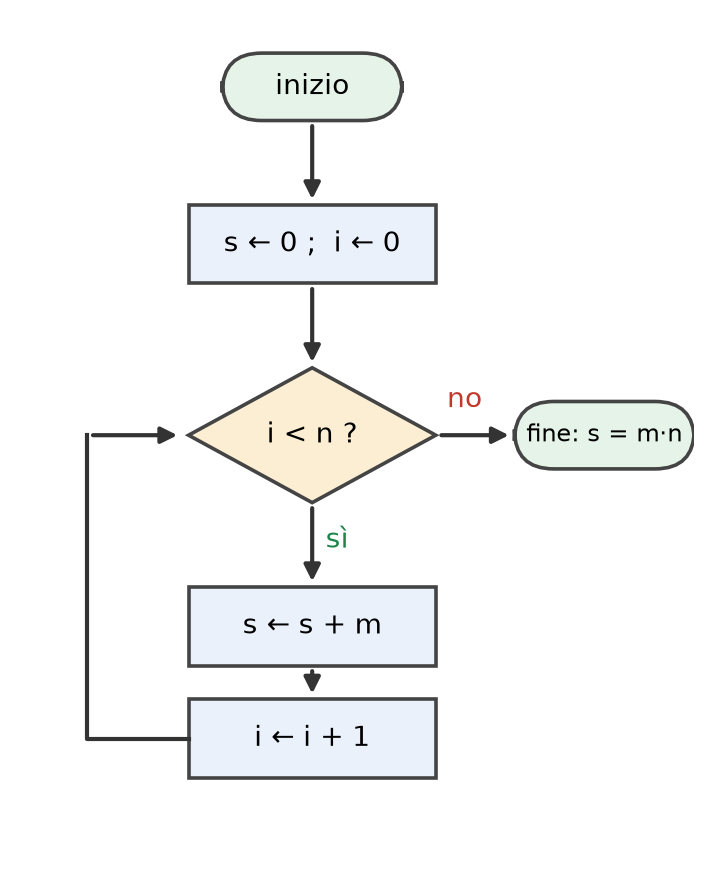
Diagramma di flusso della moltiplicazione per somme ripetute.
Verifica della Correttezza e Gestione dei Casi Limite
Un momento critico nella progettazione è la verifica dell'algoritmo su tutti i possibili valori di input, con particolare attenzione ai casi limite come n = 0. Se l'algoritmo esegue la prima somma prima di controllare se i = n, nel caso n = 0 il contatore supererà il valore di arresto e la macchina entrerà in un ciclo infinito.
Da questo errore emerge una regola generale per la scrittura dei programmi: verificare sempre le condizioni di controllo prima di eseguire le operazioni. Effettuando il controllo all'inizio, se n = 0 l'iterazione viene saltata e l'algoritmo restituisce direttamente il valore corretto 0.
Capitolo 3: Correttezza Logica, Programmazione Strutturata e Linguaggi di Programmazione
Dalla Sequenza di Salti alla Programmazione Strutturata
Nelle prime fasi di progettazione, un algoritmo viene spesso descritto mediante istruzioni di salto condizionato o incondizionato verso numeri di riga specifici. Tuttavia, fare affidamento sui numeri di riga rende la logica del programma opaca e difficile da seguire o da modificare.
La programmazione strutturata supera questo problema organizzando le istruzioni in blocchi logici annidabili. Attraverso la convenzione dell'indentazione (il rientro visivo del testo), si rende immediata la comprensione della struttura gerarchica del codice e dell'appartenenza di ogni operazione al proprio blocco.
In parole povere: la programmazione strutturata è scrivere il programma a blocchi ordinati, uno dentro l'altro come scatole cinesi, invece di saltare a casaccio da una riga all'altra. L'indentazione è il rientro del testo: più sei rientrato, più sei «dentro» a un blocco, come i punti di un elenco puntato annidato.
I Tre Pilastri della Programmazione Strutturata
I fondamenti della programmazione strutturata stabiliscono che qualsiasi algoritmo o funzione calcolabile può essere espresso combinando esclusivamente tre strutture di controllo elementari:
Sequenza: l'esecuzione ordinata delle istruzioni, una di seguito all'altra nell'ordine in cui compaiono.
Selezione (scelta condizionata): la deviazione del flusso di esecuzione verso blocchi differenti in base al verificarsi di una condizione.
Iterazione (ripetizione condizionata): la riesecuzione di un blocco di istruzioni finché una specifica condizione rimane valida.
In parole povere: ogni programma, anche il più complicato, si costruisce con tre soli mattoncini. Sequenza: fai le cose in fila. Selezione: scegli una strada o un'altra a seconda di una condizione («se piove prendo l'ombrello»). Iterazione: ripeti finché una condizione vale («continua a mescolare finché non è sciolto»).
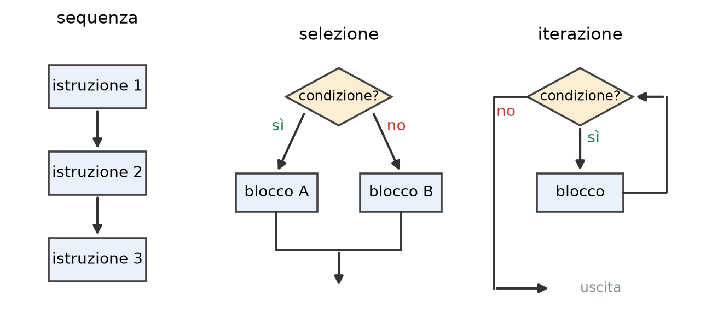
Sequenza, selezione e iterazione.
Rappresentazioni dell'Algoritmo: Pseudo-codice e Diagrammi di Flusso
Prima di tradurre un algoritmo in un vero e proprio linguaggio di programmazione, si utilizzano due notazioni intermedie principali:
Pseudo-codice strutturato: descrive il procedimento in forma testuale formale mettendo in evidenza l'annidamento e la gerarchia dei blocchi.
In parole povere: lo pseudo-codice è scrivere l'algoritmo con parole quasi normali ma ordinate, come una ricetta ben impaginata con rientri per i punti dentro un ciclo o dentro una scelta. Non è un vero linguaggio e nessun computer lo esegue: serve a ragionare prima di scrivere il codice.
Diagramma di flusso (flow-chart): è una rappresentazione grafico-testuale che mostra il flusso di controllo tra le istruzioni mediante blocchi geometrici e frecce orientate, rendendo visibili i percorsi decisionali e le ripetizioni.
In parole povere: il diagramma di flusso è la stessa idea disegnata: ogni passo è una scatolina, le frecce dicono qual è il passo dopo, e quando c'è una scelta la freccia si biforca (sì/no). È come una mappa stradale dell'algoritmo, utile per vedere subito dove si decide e dove si ripete.
Classificazione dei Linguaggi di Programmazione e il Linguaggio C
Un linguaggio di programmazione è un insieme formale di parole e regole sintattiche che consente di trasformare un algoritmo in un programma eseguibile dalla macchina. I linguaggi si articolano principalmente in due categorie:
Linguaggi di basso livello: come il linguaggio macchina (sequenze di bit) o l'assembly (mnemonici testuali che lo rappresentano), strettamente legati all'architettura fisica della CPU.
Linguaggi di alto livello: come il C, Python o Java, espressi in una forma più astratta e vicina al linguaggio naturale.
In parole povere: un linguaggio di programmazione è una lingua con poche parole e regole rigidissime, pensata perché una macchina capisca esattamente cosa fare. Basso livello vuol dire «parlare come parla la macchina» (bit o sigle legate a quella CPU): preciso ma faticoso. Alto livello (C, Python, Java) vuol dire «parlare in modo più umano», lasciando al compilatore il compito di tradurre.
L'obiettivo fondamentale del corso risiede nell'imparare a tradurre le specifiche logiche di un algoritmo espresso in italiano in codice eseguibile in linguaggio C.
Il Modello della Macchina di Von Neumann
Per comprendere come il codice scritto in linguaggio C venga elaborato concretamente dall'hardware, si fa riferimento all'architettura della macchina di Von Neumann. Questo modello teorico e strutturale definisce il funzionamento dei calcolatori moderni, nei quali sia i dati sia le istruzioni del programma vengono memorizzati nello stesso spazio di memoria ed elaborati dalla CPU.
Capitolo 4: Architettura dei Calcolatori e Modello di Von Neumann
Evoluzione Storico-Tecnologica: Dalle Macchine Cablate al Programma Memorizzato
L'informatica moderna non è nata con i calcolatori elettronici, ma rappresenta il culmine di un lungo percorso di evoluzione tecnologica volta ad automatizzare il calcolo. Nelle sue prime fasi storiche, il termine "calcolatore" indicava una persona incaricata di eseguire manualmente calcoli complessi con l'ausilio di strumenti meccanici basilari. Il primo strumento computazionale noto dall'antichità è l'abaco, un dispositivo meccanico che permetteva di memorizzare numeri tramite pallini o biglie. Tuttavia, l'abaco era privo di qualsiasi logica interna: la correttezza dell'algoritmo e l'esecuzione delle operazioni dipendevano interamente dall'operatore umano.
Nel 1642, il matematico Blaise Pascal progettò la Pascalina, una delle prime calcolatrici meccaniche ad ingranaggi. Ogni ingranaggio possedeva 10 denti (corrispondenti alle cifre decimali da 0 a 9) e la macchina eseguiva addizioni in automatico grazie a una leva interposta tra ingranaggi adiacenti che realizzava il riporto delle decine. Sebbene la Pascalina incorporasse sia la memorizzazione dei dati sia un'operazione elementare (l'addizione), essa mancava ancora del concetto di programma: le sequenze di operazioni venivano scelte e pilotate manualmente dall'utente.
Queste prime macchine erano macchine cablate (hard-wired). In queste architetture la logica di funzionamento era scolpita direttamente nella struttura fisica dei circuiti o degli ingranaggi. Un calcolatore cablato era in grado di eseguire un'unica funzione specifica (tipicamente solo addizione e sottrazione) e non era programmabile: per introdurre nuove funzionalità o variare l'algoritmo occorreva riprogettare, ricablare o riconfigurare fisicamente la macchina tramite interruttori e cavi elettrici.
In parole povere: una macchina cablata ha il suo funzionamento «fisso nei fili»: fa un solo mestiere, come una calcolatrice che sa solo sommare. Per cambiarle compito bisogna rimontarla o ricollegare cavi e interruttori, perché non si può programmare.
La svolta concettuale decisiva è arrivata con l'idea di separare l'hardware dal programma:
Si individua un insieme ridotto di operazioni elementari realizzabili direttamente in hardware (addizione, confronto, lettura/scrittura).
Si combinano queste operazioni elementari in sequenze complesse (come la moltiplicazione per somme ripetute).
Si codificano sia i dati sia le istruzioni operative mediante numeri, consentendo alla stessa macchina di eseguire compiti completamente diversi semplicemente cambiando la sequenza numerica delle istruzioni, senza alcuna modifica all'hardware sottostante.
Tra le tappe fondamentali di questa evoluzione si annoverano la Macchina Analitica di Charles Babbage (descritta intorno al 1840), primo esempio di macchina di calcolo programmabile, con dati e istruzioni su schede perforate, il modello astratto della Macchina Universale di Turing (1936), formulato da Alan Turing per analizzare i limiti matematici della computabilità, e l'ENIAC (1943-1945), il primo calcolatore elettronico general purpose a valvole termoioniche. L'ENIAC soffriva tuttavia di due limiti: utilizzava una complessa rappresentazione decimale e richiedeva ancora lunghe operazioni manuali di riconfigurazione dei cavi per cambiare programma.
L'EDVAC, progettato nel 1944 da John Mauchly e J. Presper Eckert (già sviluppatori dell'ENIAC), introdusse tre intuizioni rivoluzionarie. Il matematico John von Neumann, consulente del progetto, descrisse e pubblicò per primo questa architettura nel 1945: da qui il celebre Modello di Von Neumann (o architettura EDVAC), che comprende che definiscono tuttora i calcolatori moderni:
Programma memorizzato: le istruzioni del programma sono caricate all'interno della memoria centrale della macchina anziché essere realizzate tramite collegamenti elettrici.
In parole povere: programma memorizzato significa che le istruzioni stanno nella memoria come se fossero dati, invece di essere fissate nei circuiti. Per fare un lavoro diverso basta caricare un altro elenco di istruzioni, non cambiare l'hardware: come inserire un'altra ricetta nello stesso forno.
Memoria unificata: la memoria principale ospita nello stesso spazio d'indirizzamento sia le istruzioni del programma sia i dati d'esecuzione.
In parole povere: memoria unificata significa un unico grande scaffale con un solo sistema di numerazione delle caselle, dove stanno sia le istruzioni sia i dati. Per la macchina sono entrambi solo numeri in caselle; li distingue solo il modo in cui vengono usati.
Rappresentazione binaria: tutte le informazioni (dati e comandi) sono codificate esclusivamente tramite sequenze di bit.
Rappresentazione dell'Informazione e Gerarchia della Memoria
Per un calcolatore elettronico "tutto è numero": testi, immagini, suoni, istruzioni e variabili sono memorizzati ed elaborati sotto forma di valori numerici binarizzati. La scelta della codifica binaria non risponde a una necessità matematica dell'uomo, ma a un vincolo d'efficienza e praticità dell'hardware elettronico.
Il Bit (Binary Information Token)
Il bit è l'unità fondamentale dell'informazione e può assumere solo due stati distinti: 0 oppure 1 (corrispondenti a spento/acceso, falso/vero). Dal punto di vista fisico, un bit è facilissimo ed economico da realizzare ed elaborare in modo stabile mediante dispositivi come relè, valvole o transistor, che realizzano circuiti a due stati stabili. Realizzare circuiti fisici con 10 stati stabili distinti per la rappresentazione decimale risulterebbe estremamente complesso, costoso e soggetto a errori d'interferenza.
In parole povere: il bit è la più piccola quantità di informazione: un interruttore che può essere solo spento (0) o acceso (1). Si usa perché è facile costruire un circuito che distingue solo due stati senza sbagliare, mentre distinguerne dieci sarebbe delicatissimo.
Raggruppando N bit si ottiene una crescita esponenziale della quantità di informazione rappresentabile: con N bit si possono codificare 2N stati o combinazioni distinte.
Il Byte
La dimensione elementare della memoria si è standardizzata attorno al byte, una sequenza ordinata di 8 bit. Un singolo byte consente di rappresentare 28 = 256 combinazioni numeriche differenti (da 0 a 255). Il byte costituisce l'unità base di indirizzamento della memoria: all'interno della RAM, ogni singolo byte è identificato in modo univoco da un numero intero progressivo chiamato indirizzo di memoria, a partire dall'indirizzo 0.
In parole povere: il byte è un gruppo di 8 interruttori (bit): con 8 on/off si possono fare 256 combinazioni diverse, da 0 a 255. La memoria è come una fila di caselle, ognuna grande un byte e numerata a partire da 0: quel numero di casella è il suo indirizzo, come il numero civico di una via.
La Parola (Word)
Nonostante il byte sia l'unità di indirizzamento, elaborare grandi quantità di dati un singolo byte alla volta risulterebbe troppo lento. La memoria e la CPU vengono quindi organizzate in parole (word). Una parola è un raggruppamento fisso di byte (tipicamente 16, 32 o 64 bit, ovvero 2, 4 o 8 byte) che rappresenta l'unità operativa di elaborazione della CPU. Nelle architetture a 64 bit, ad esempio, l'Unità Aritmetico-Logica lavora nativamente su blocchi di 8 byte alla volta per effettuare calcoli algebrici rapidi ed efficienti.
In parole povere: la parola è il «boccone» che la CPU è in grado di mangiare in una volta sola. Una CPU a 64 bit lavora su blocchi da 8 byte alla volta, invece di spulciare un byte per volta: è come leggere una frase intera anziché lettera per lettera.
La memoria centrale (RAM) viene modellata dalla CPU come una sequenza ordinata di celle suddivisa idealmente in due aree logiche distinte:
Area del Programma: posizionata nella parte iniziale della memoria (a partire dall'indirizzo 0), contiene i codici binari delle istruzioni da eseguire.
Area dei Dati: posizionata nello spazio rimanente, viene utilizzata dal programma durante l'esecuzione per leggere e scrivere le variabili.
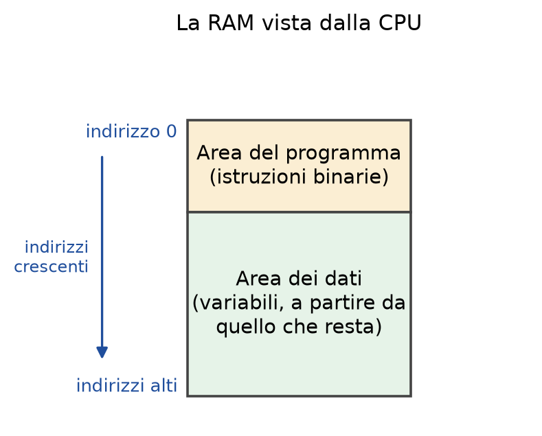
La memoria centrale: area del programma e area dei dati.
Anatomia dell'Architettura di Von Neumann
L'architettura di Von Neumann si compone di quattro blocchi funzionali connessi tra loro:
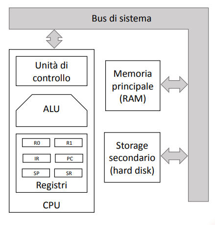
Memoria Principale (RAM - Random Access Memory): è la memoria volatile ad accesso rapido che conserva sia il codice del programma sia i dati di lavoro.
In parole povere: la RAM è la lavagna su cui il computer scrive, mentre lavora, sia il programma sia i dati. È velocissima, ma «volatile»: se spegni il computer la lavagna si cancella.
CPU (Central Processing Unit): è il cervello elettronico che esegue le istruzioni a passi discreti cadenzati da un segnale d'orologio detto clock. La CPU è suddivisa al suo interno in tre sottounità principali:
Unità di Controllo (CU - Control Unit): coordina e pilota tutti i componenti della macchina. Legge le istruzioni dalla RAM, le decodifica e attiva i circuiti appropriati.
In parole povere: l'unità di controllo è il direttore d'orchestra: legge l'istruzione dalla memoria, capisce di che cosa si tratta e dice agli altri componenti cosa fare. Non calcola, coordina.
Unità Aritmetico-Logica (ALU - Arithmetic Logic Unit): contiene i circuiti elettronici (addizionatori, comparatori) per eseguire le operazioni algebriche (somme, sottrazioni) e logiche (AND, OR, NOT, confronti).
In parole povere: l'ALU è la calcolatrice della CPU: fa le operazioni aritmetiche (somme, sottrazioni), i confronti e le operazioni logiche (AND, OR, NOT). Tutti i calcoli veri passano da qui.
Registri: memorie interne alla CPU ad altissima velocità e capacità ridotta, utilizzate come spazio di lavoro temporaneo o per la gestione dello stato della macchina. La CPU non lavora mai direttamente sui dati in RAM, ma carica i valori dalla RAM nei registri, li elabora tramite l'ALU e infine riscrive i risultati nella RAM.
In parole povere: la CPU è il «cervello» che esegue le istruzioni un passo alla volta, al ritmo di un orologio interno (clock). I registri sono i suoi minuscoli appunti sul tavolo: pochissimi, ma a portata di mano e rapidissimi. La CPU non lavora direttamente sulla RAM: prende i numeri dalla RAM, li mette sul tavolo (registri), calcola e rimette il risultato in RAM.
I Registri Fondamentali della CPU
Program Counter (PC): contiene l'indirizzo di memoria della prossima istruzione da prelevare ed eseguire. Durante il funzionamento ordinario il PC viene automaticamente incrementato per puntare all'istruzione successiva; in presenza di salti condizionati o incondizionati, il PC viene sovrascritto con un nuovo indirizzo per deviare il flusso di esecuzione.
In parole povere: il program counter è il segnalibro del programma: contiene l'indirizzo dell'istruzione da eseguire adesso. Dopo ogni istruzione di solito avanza di una posizione; un salto non fa altro che spostare il segnalibro in un altro punto.
Instruction Register (IR): memorizza il codice numerico dell'istruzione attualmente in fase di decodifica ed esecuzione, prelevato dalla RAM durante la fase di fetch.
In parole povere: l'instruction register è la «scrivania» dove viene appoggiata l'istruzione che la CPU sta eseguendo in questo momento, dopo averla prelevata dalla RAM. Il program counter dice quale istruzione prendere, l'IR contiene quella presa.
Registri Generali / Ausiliari (es. R0, R1, R2, R3): celle di supporto utilizzate per contenere gli operandi e i risultati parziali dell'ALU.
Bus di Sistema: il canale di comunicazione fisico (linee elettriche) che connette la CPU, la memoria RAM e i dispositivi di I/O, consentendo il trasferimento di indirizzi, dati e segnali di controllo.
In parole povere: il bus di sistema è l'insieme di fili che fa da «strada» tra CPU, memoria e dispositivi di ingresso/uscita: su quella strada viaggiano indirizzi («vai a leggere la casella 400»), dati e segnali di controllo.
Storage Secondario (Hard Disk, SSD, Nastri): memoria non volatile ad alta capacità utilizzata per conservare permanentemente programmi e file quando il calcolatore è spento.
In parole povere: lo storage secondario (disco fisso, SSD) è l'archivio o lo scaffale di casa: capiente e non si cancella quando spegni, ma più lento. Programmi e file stanno lì a lungo; quando servono vengono portati nella RAM, che è il tavolo da lavoro.
Ciclo di Esecuzione Deterministico e Ruolo del Programma di Controllo
All'accensione del calcolatore, un programma di controllo residente chiamato monitor (l'antenato del moderno sistema operativo) legge il programma e i dati dallo storage secondario e li carica nella memoria RAM a partire da indirizzi fissati (il programma all'indirizzo 0). Completato il caricamento, la CPU viene avviata impostando il Program Counter all'indirizzo 0.
In parole povere: il monitor è un piccolo programma sempre presente, l'antenato del sistema operativo, che all'accensione fa da «magazziniere»: prende il programma dal disco, lo mette in RAM dall'indirizzo 0 e poi dà il via alla CPU puntando il program counter all'indirizzo 0.
La CPU opera eseguendo in modo indefinito e deterministico il ciclo Fetch-Decode-Execute (Prelevamento, Decodifica, Esecuzione) guidato dagli impulsi del clock:
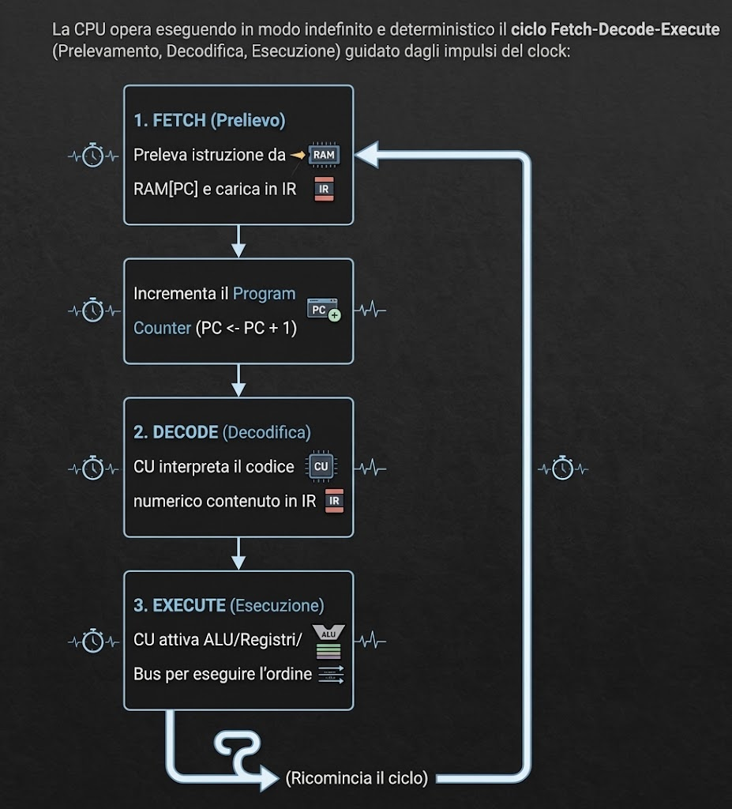
Fetch (Prelievo): l'Unità di Controllo legge il valore presente nel Program Counter (PC) e richiede al bus di sistema il contenuto della cella di memoria RAM corrispondente a quell'indirizzo. L'istruzione prelevata viene salvata nell'Instruction Register (IR). Contemporaneamente, il PC viene incrementato per puntare alla cella successiva.Decode (Decodifica): l'Unità di Controllo analizza la sequenza di bit presente nell'IR, consultando una tabella interna cablata per identificare l'operazione da svolgere e gli eventuali operandi/registri coinvolti.
Execute (Esecuzione): la CU attiva i moduli fisici necessari. Se l'istruzione richiede un calcolo algebrico, l'ALU preleva i dati dai registri, esegue l'operazione e scrive il risultato nel registro di destinazione. Se l'istruzione è un salto (JMP), il valore del PC viene sovrascritto con il nuovo indirizzo di destinazione.
In parole povere: il ciclo fetch-decode-execute è ciò che la CPU fa all'infinito, come uno scrivano: fetch = va a prendere la prossima istruzione (guardando il program counter), decode = capisce cosa chiede, execute = la esegue. Poi ricomincia con la successiva.
Determinismo e Assenza di Terminazione Hardware
Ogni singolo passo del ciclo modifica lo stato della macchina (inteso come l'insieme dei valori contenuti nella RAM e nei registri). L'esecuzione è strettamente deterministica: fissati lo stato iniziale e la sequenza delle istruzioni, la macchina produrrà sempre esattamente lo stesso stato finale e gli stessi risultati.
In parole povere: lo stato della macchina è la «fotografia» di tutto ciò che c'è in memoria e nei registri in un dato istante. Deterministico significa che non c'è casualità: stessa fotografia di partenza e stesse istruzioni portano sempre alla stessa fotografia finale, come una ricetta seguita alla lettera.
Inoltre, a livello hardware la CPU non possiede un concetto nativo di "fine programma": essa continua ad eseguire il ciclo fetch-decode-execute all'infinito. La terminazione del programma deve quindi essere esplicitamente programmata cedendo il controllo al sistema operativo tramite un'istruzione apposita o un salto di arresto.
Capitolo 5: Dal Linguaggio Macchina al C e la Filiera di Compilazione
Dal Codice Macchina al Linguaggio Assembly
I primi calcolatori venivano programmati direttamente in linguaggio macchina, impostando manualmente i singoli bit all'interno dei registri attraverso interruttori fisici o schede perforate. Il linguaggio macchina rappresenta l'unico livello espressivo direttamente comprensibile ed eseguibile dall'hardware di un processore. Esso è costituito esclusivamente da sequenze numeriche binarie (stringhe di 0 e 1) che codificano le istruzioni esecutive e gli indirizzi degli operandi.
In parole povere: il linguaggio macchina è l'unica lingua che il processore capisce davvero: istruzioni scritte come lunghe file di 0 e 1. Va benissimo per la macchina e malissimo per le persone, che sbagliano a scrivere o leggere sequenze del genere.
Ciascuna famiglia di CPU adotta un proprio insieme di istruzioni macchina, noto come Instruction Set Architecture (ISA) (come x86, ARM o RISC-V). Di conseguenza, il codice macchina è strettamente dipendente dall'hardware e non è portabile: un programma compilato per un'architettura non può funzionare su un processore dotato di un ISA differente. Inoltre, la programmazione in codice binario risulta estremamente laboriosa, soggetta a errori e del tutto illeggibile per un essere umano.
In parole povere: ogni famiglia di CPU (x86, ARM, RISC-V) ha il suo «vocabolario» di istruzioni macchina, chiamato ISA. Un programma in codice macchina per un tipo di CPU non funziona su un'altra, come un libro in una lingua che il lettore non conosce.
Per superare questa barriera si è introdotto il linguaggio assembly, che costituisce una rappresentazione simbolica e testuale del linguaggio macchina. L'assembly sostituisce le sequenze numeriche binarie con codici mnemonici leggibili (come LOAD, STORE, ADD, CMP, JMP, INC) per identificare le operazioni e i registri. Ogni istruzione assembly (LOAD, ADD, STORE, …) corrisponde a una singola istruzione macchina; le direttive come ADDR A = 400 definiscono soltanto indirizzi simbolici e non producono codice macchina.
In parole povere: l'assembly è il linguaggio macchina con i nomi al posto dei numeri: invece di una fila di bit scrivi LOAD (carica), ADD (somma), STORE (salva), che si ricordano. Resta una riga per ogni istruzione della CPU: è lo stesso discorso, solo leggibile.
La traduzione dal codice assembly al codice macchina viene effettuata automaticamente da un programma speciale chiamato assembler (o assemblatore). Sebbene l'assembly sia molto più comprensibile per il programmatore rispetto al binario puro, esso rimane un linguaggio di basso livello e non portabile, poiché riflette in modo speculare la struttura fisica e i registri della CPU sottostante.
In parole povere: l'assembler (assemblatore) è il traduttore automatico che trasforma le sigle dell'assembly nelle sequenze di 0 e 1 che la CPU capisce. L'assembly è più comodo del binario, ma è ancora legato a quella specifica CPU.
Confronto Pratico: L'Addizione e la Moltiplicazione a Basso Livello
Per comprendere l'operatività dell'assembly, consideriamo il problema di sommare due numeri interi memorizzati nella RAM agli indirizzi A = 400 e B = 404, salvando il risultato nell'indirizzo A. A basso livello, la CPU non possiede un'istruzione unica in grado di manipolare direttamente due celle di memoria RAM. L'operazione deve quindi essere scomposta nei seguenti passi elementari:
LOAD, R0, @A: la CPU richiede alla memoria centrale il contenuto della cella 400 (es. il valore 12) tramite il bus di sistema e lo carica nel registro interno R0.
LOAD, R1, @B: viene prelevato il dato alla cella 404 (es. il valore -8) e memorizzato nel registro R1.
ADD, R0, R1: l'Unità di Controllo attiva l'Unità Aritmetico-Logica (ALU), la quale preleva i valori da R0 ed R1, esegue la somma (12 + (-8) = 4) e sovrascrive il risultato all'interno di R0.
STORE, R0, @A: il valore aggiornato (4) presente in R0 viene inviato sul bus e riscritto nella cella di memoria RAM 400.
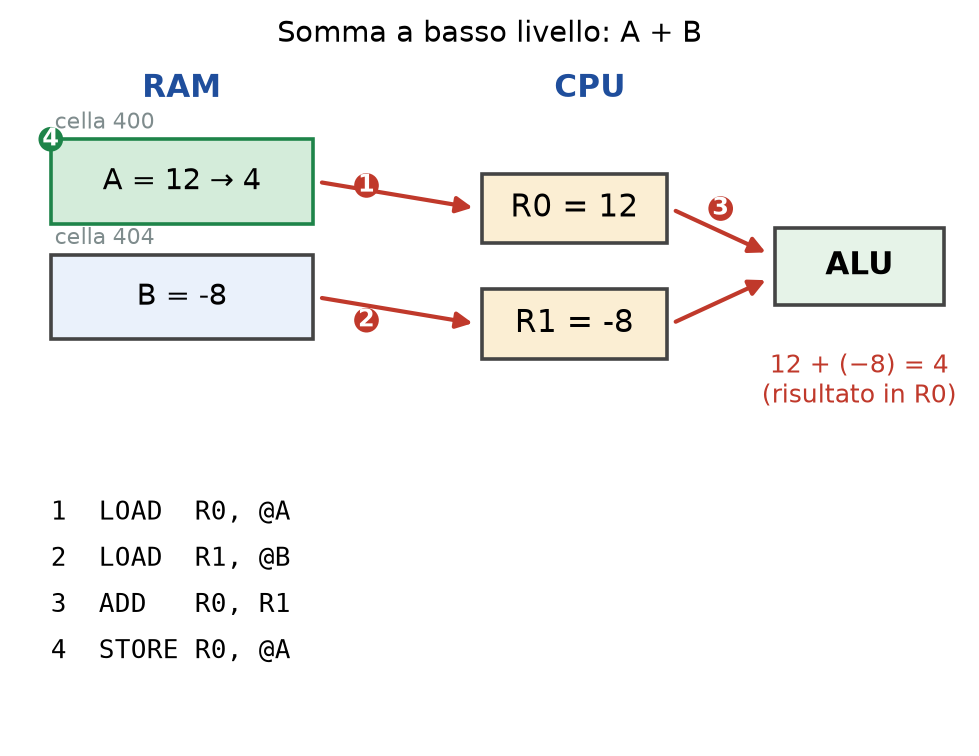
Come la CPU esegue la somma A + B: due LOAD, ADD, STORE.
Durante ognuno di questi passaggi, la CPU segue il ciclo deterministico guidato dal clock: il Program Counter (PC) conserva l'indirizzo dell'istruzione da caricare, mentre l'Instruction Register (IR) memorizza il codice numerico dell'istruzione in fase di decodifica ed esecuzione.
Se analizziamo un algoritmo leggermente più complesso, come la moltiplicazione tra interi tramite somme ripetute, la complessità dell'assembly aumenta drasticamente. Per implementare la logica dell'accumulatore s e del contatore i, il programma assembly deve coordinare quattro registri di lavoro (R0 per s, R1 per i, R2 per m, R3 per n) gestendo esplicitamente i salti e i confronti:
1. LOAD, R0, 0 // Inizializza R0 (accumulatore s) a 0
2. LOAD, R1, 0 // Inizializza R1 (contatore i) a 0
3. LOAD, R2, @m // Carica il valore all'indirizzo m in R2
4. LOAD, R3, @n // Carica il valore all'indirizzo n in R3
5. CMP R1, R3 // Confronta il registro R1 (i) con R3 (n)
6. JMPEQ <riga 10> // Se i == n salta alla riga 10 (uscita), altrimenti prosegue
7. ADD, R0, R2 // R0 <- R0 + R2 (s <- s + m)
8. INC, R1 // R1 <- R1 + 1 (i <- i + 1)
9. JMP <riga 5> // Salto incondizionato alla riga 5 per rivalutare il ciclo
10. STORE, R0, @m // Salva il risultato contenuto in R0 all'indirizzo m
I Limiti dell'Assembly e la Nascita dei Linguaggi di Alto Livello
L'esempio della moltiplicazione mette in luce i profondi limiti metodologici della programmazione a basso livello:
Verbosità e prolissità: un algoritmo semplice come la moltiplicazione richiede 10 righe di assembly (e l'addizione 4).
Opacità semantica: i nomi dei registri (R0, R1, …) e le istruzioni di salto (JMP, JMPEQ) non trasmettono il significato logico delle operazioni.
Mancanza di struttura: il flusso di esecuzione è gestito da salti grezzi verso numeri di riga o indirizzi di memoria, privo dei blocchi annidati caratteristici della programmazione strutturata.
Totale assenza di portabilità: se si sostituisce la CPU, il codice assembly deve essere riscritto integralmente da capo rispettando il nuovo hardware.
Per svincolare lo sviluppo software dalle peculiarità fisiche dei singoli processori, a partire dagli anni '50 sono stati ideati i linguaggi di programmazione di alto livello. Questi linguaggi adottano una sintassi astratta, più vicina al linguaggio matematico e naturale, nascondendo la gestione di basso livello dei registri e degli indirizzi di memoria.
Nascita, Scopi e Caratteristiche del Linguaggio C
Unix nasce nel 1969 ai Bell Labs (Ken Thompson, PDP-7, scritto in assembly); per superare i limiti dell'assembly Dennis Ritchie progetta il linguaggio C (prima versione nel 1972) e Unix viene poi riscritto in C. Il linguaggio C è diventato uno dei pilastri fondamentali dell'informatica. Il C è stato concepito per offrire un bilanciamento ideale: garantisce un controllo diretto ed efficiente sull'hardware e sulla memoria, mantenendo al contempo un livello di astrazione, strutturazione e portabilità elevato.
Il C si definisce attraverso quattro caratteristiche fondamentali:
Compilato: il codice sorgente testuale scritto dal programmatore viene tradotto integralmente in codice macchina prima di poter essere eseguito dal calcolatore.
In parole povere: un linguaggio compilato funziona come un libro tradotto per intero prima di essere letto: il compilatore trasforma tutto il testo C in codice macchina in anticipo, e poi la macchina esegue direttamente il risultato, senza più bisogno del testo originale.
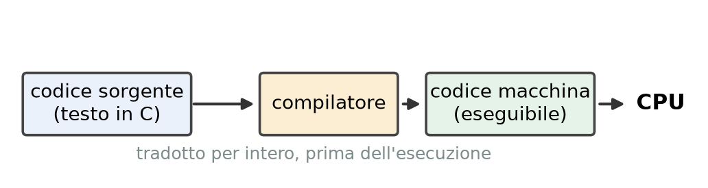
Il C è compilato: il sorgente viene tradotto in codice macchina prima di essere eseguito.
Imperativo: il programma è formulato come una sequenza ordinata di istruzioni e comandi che modificano progressivamente lo stato delle variabili in memoria.
Strutturato: il codice si organizza in moduli (funzioni) e blocchi di istruzioni racchiusi da delimitatori formali (le parentesi graffe {}), per cui non servono salti a numeri di riga.
Fortemente tipizzato: ogni variabile o dato utilizzato deve essere preventivamente dichiarato specificandone il tipo (es. int, float, char). Il tipo attribuisce un significato semantico e una dimensione specifica alla sequenza di bit memorizzata nella RAM.
In parole povere: fortemente tipizzato vuol dire che ogni variabile deve dichiarare in anticipo che «tipo» di cosa contiene (intero, decimale, carattere). È come etichettare le scatole: «solo viti», «solo bulloni». Il tipo decide quanto spazio occupa e come interpretare i bit che ci stanno dentro.
Capitolo 6: Il Type System del C, Tipi Primitivi e Astrazione delle Variabili
Dai Bit ai Tipi di Dato: Il Type System del C
Nel modello di calcolo hardware di Von Neumann, la memoria centrale (RAM) è modellata come una sequenza lineare di byte contenente esclusivamente stringhe indistinguibili di bit binari. Per consentire al software di rappresentare e manipolare la complessità del mondo reale (numeri, caratteri, decisioni), è necessario attribuire un significato formale alle sequenze di bit memorizzate. Questo compito è svolto dal tipo di dato, che agisce come un ponte semantico tra i bit binari dell'hardware e il senso logico assegnato ai dati dal programmatore.
In C, che è un linguaggio fortemente tipizzato, un tipo di dato qualifica una sequenza di bit in memoria secondo sei dimensioni fondamentali:
Nome: l'identificatore simbolico utilizzato nel codice sorgente per indicare il tipo (ad esempio int, float, char).
Dimensione in memoria: quanti byte occupa nella RAM un dato di quel tipo (tipicamente 4 byte per un int e 8 per un double; dipende dalla piattaforma).
Dominio di valori: l'insieme discreto di valori validi che una variabile di quel tipo può contenere.
Operazioni consentite: l'insieme di operatori e funzioni algebriche o logiche applicabili ai dati di quel tipo (ad esempio la somma tra interi o l'estrazione della radice quadrata sui numeri reali).
Rappresentazione interna: la regola di codifica binaria adottata dall'hardware per strutturare i bit (ad esempio il complemento a 2 per gli interi con segno o lo standard IEEE 754 per i numeri in virgola mobile).
Compatibilità e conversione: l'insieme di regole implicite ed esplicite (cast) che disciplinano l'interazione tra tipi differenti all'interno delle espressioni.
In parole povere: un tipo di dato dice al computer come interpretare una fila di bit: senza tipo sono solo 0 e 1, col tipo diventano per esempio un numero intero, un decimale o una lettera. Il tipo stabilisce anche quanto spazio occupa, quali valori ammette e quali operazioni hanno senso (sommare due interi sì, la radice quadrata di una lettera no).
Tassonomia dei Tipi Primitivi e Finitudine dei Domini
I tipi nativi (built-in) messi a disposizione dal linguaggio C si articolano nelle seguenti categorie principali:
Un tipo nativo (o primitivo/built-in) è un tipo di dato fornito direttamente dal linguaggio (come int, float o char) che stabilisce la dimensione occupata in memoria, la codifica binaria e le operazioni consentite
In parole povere: un tipo nativo è un tipo «di fabbrica», già fornito dal linguaggio senza che tu debba costruirlo: int, float, char sono i mattoncini base con cui poi si costruisce tutto il resto.
Numeri Interi (ℤ): rappresentano numeri relativi con segno. Il tipo fondamentale è int (tipicamente allocato su 4 byte), affiancato dalle varianti short (intero a dimensione ridotta, 2 byte), long (4 o 8 byte a seconda di architettura e sistema operativo) e long long (8 byte).
Numeri Naturali (ℕ): definiti applicando il qualificatore unsigned ai tipi interi (come unsigned int o unsigned short). Rimuovendo la rappresentazione del segno negativo, l'intervallo dei valori positivi rappresentabili raddoppia (ad esempio un unsigned int a 32 bit copre l'intervallo da 0 a 232-1 = 4.294.967.295).
Numeri Reali (ℝ): codificano valori in virgola mobile e sono rappresentati dai tipi float (singola precisione, 4 byte) e double (doppia precisione, 8 byte).
Tipi Accessori e Speciali:
char: gestisce singoli caratteri del codice ASCII e occupa esattamente 1 byte (8 bit).
bool: tipo logico booleano che ammette i valori 0/1 (false/true), definito nell'header file <stdbool.h>.
size_t: tipo intero senza segno (unsigned) utilizzato per esprimere la dimensione delle allocazioni di memoria, definito nell'header file <stddef.h>.
Sebbene le categorie matematiche ℕ, ℤ e ℝ indichino insiemi infiniti, i tipi numerici del C sono modelli finiti dei corrispondenti domini matematici, poiché ciascun dato viene memorizzato in un numero fisso di bit.
I vincoli di memoria introducono limiti rigorosi:
Per gli interi, il superamento dell'intervallo massimo genera un errore di overflow non sempre rilevabile dal compilatore, che di solito fa "ripartire" il ciclo numerico dal limite minimo negativo. Per gli interi con segno lo standard C lo lascia formalmente indefinito.
In parole povere: l'overflow capita quando il risultato di un calcolo è troppo grande per il numero di bit disponibili: è come il contachilometri che arriva a 99999 e ricomincia da 00000. Con un int a 32 bit, dopo il massimo si ripassa dai valori negativi, senza che il programma si lamenti.
Per i numeri reali (float/double), la rappresentazione binaria offre una precisione finita con possibili errori di arrotondamento.
L'assegnamento di un valore reale a una variabile intera causa il troncamento (rimozione della parte frazionaria senza arrotondamento).
In parole povere: il troncamento è il «taglio con la forbice» della parte dopo la virgola: 8,89 diventa 8 (non 9, perché non si arrotonda). Succede quando metti un numero con la virgola in una variabile intera.
int x = 2147483647; // Valore massimo per un int con segno a 32 bit
x = x + 1; // OVERFLOW (indefinito per gli int con segno): tipicamente x diventa -2147483648
int y = 8.89; // TRONCAMENTO: il decimale viene scartato, y vale 8
L'Operatore sizeof e Relazioni di Dimensione
Per garantire la portabilità del codice su architetture hardware differenti (a 16, 32 o 64 bit), il linguaggio C non fissa in modo rigido la dimensione assoluta in byte di tutti i tipi primitivi. L'operatore unario sizeof permette di ricavare, a tempo di compilazione, il numero esatto di byte occupati da un tipo o da una variabile, restituendo un valore di tipo size_t.
In parole povere: sizeof è un operatore che risponde alla domanda «quanti byte occupa questo tipo o questa variabile?». Serve perché la dimensione può cambiare da un computer all'altro, quindi invece di ricordarla a memoria la si chiede alla macchina.
Il C garantisce formalmente le seguenti relazioni d'ordine sulle dimensioni:
sizeof(char) ≤ sizeof(short) ≤ sizeof(int) ≤ sizeof(long) ≤ sizeof(long long)
sizeof(float) ≤ sizeof(double)
Anatomia e Dichiarazione delle Variabili
Nelle architetture hardware di Von Neumann/EDVAC, le operazioni di calcolo agiscono direttamente su valori memorizzati a specifici indirizzi fisici della RAM. La variabile costituisce l'astrazione fondamentale fornita dai linguaggi di alto livello per associare un nome simbolico e un tipo di dato a una porzione di memoria, svincolando il programmatore dalla gestione manuale degli indirizzi esadecimali.
Ogni variabile presente all'interno di un programma C è identificata univocamente da una quaterna di attributi:
Nome (Identificatore): il termine simbolico scelto dal programmatore per fare riferimento alla variabile nel codice sorgente.
Tipo: la regola semantica che determina la dimensione in byte, la codifica binaria e le operazioni valide per quel dato.
Indirizzo: la posizione fisica della prima cella di RAM in cui il dato è memorizzato, determinata automaticamente dal compilatore e dal sistema di esecuzione.
Valore: il contenuto informativo espresso in bit memorizzato nella cella, che può variare nel corso dell'esecuzione.
In parole povere: una variabile è una porzione di memoria a cui dai un nome comodo. Ogni variabile ha quattro caratteristiche: il nome (l'etichetta sulla scatola), il tipo (cosa ci puoi mettere), l'indirizzo (dove sta lo scaffale, scelto dal compilatore) e il valore (cosa c'è dentro ora, che può cambiare). Il nome è un modo per non dover ricordare gli indirizzi.
int contatore = 1; // Indirizzo: es. 0x904A, Tipo: int (4 byte), Valore: 1
float media = 60.54f; // Indirizzo: es. 0x367F, Tipo: float (4 byte), Valore: 60.54
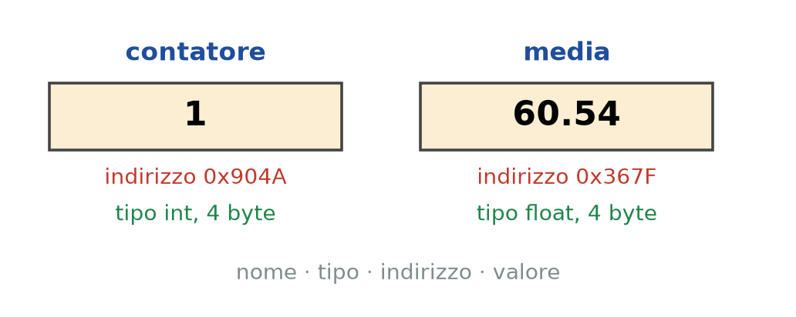
Ogni variabile ha nome, tipo, indirizzo e valore.
Regole Sintattiche per gli Identificatori
L'assegnazione dei nomi alle variabili deve rispettare regole sintattiche stringenti:
L'identificatore deve essere univoco all'interno del suo ambito di visibilità (scope).
Può contenere esclusivamente lettere (maiuscole o minuscole, considerando che il C è un linguaggio case-sensitive), cifre numeriche e il carattere di underscore _.
Deve iniziare obbligatoriamente con una lettera o con un underscore; non può mai iniziare con una cifra numerica.
Non può contenere spazi o simboli speciali (!, @, #, $, %).
Non può coincidere con le parole chiave (keywords) riservate del linguaggio (come int, double, char, sizeof, return, if, while) né con i nomi delle funzioni della libreria standard (main, printf).
Dichiarazione vs Inizializzazione e Valore Indeterminato
La dichiarazione è l'istruzione formale con cui si comunica al compilatore l'intenzione di utilizzare una variabile, specificandone il tipo e il nome (ad esempio int x;). La dichiarazione forza il sistema a riservare lo spazio di memoria necessario all'interno dell'area dati dello stack (pila).
In parole povere: dichiarare una variabile è avvisare il compilatore «mi serve una scatola di questo tipo e la chiamo così»: lui riserva lo spazio in memoria. È come prenotare un tavolo al ristorante: il tavolo è tuo, ma non c'è ancora nessuno seduto.
Se una variabile locale viene dichiarata senza assegnarle un valore iniziale (assenza di inizializzazione contestuale), lo spazio di memoria viene allocato, ma la cella mantiene i bit preesistenti lasciati da precedenti elaborazioni della RAM. Di conseguenza, il valore iniziale di una variabile non inizializzata è indeterminato (rappresentato convenzionalmente negli schemi teorici con il simbolo ?).
In parole povere: inizializzare una variabile è metterci un valore al momento della dichiarazione. Se non lo fai, la scatola contiene quello che c'era prima, come una lavagna non cancellata: un valore casuale e imprevedibile, detto indeterminato (nei disegni si scrive «?»). Prima di usarla conviene sempre darle un valore.
int main(void) {
int x; // Dichiarazione: allocati 4 byte sullo stack, valore indeterminato (?)
x = 10; // Assegnamento successivo: il valore diventa 10
float y = 3.14f; // Inizializzazione contestuale: dichiarazione e valore simultanei
}
Capitolo 7: Modello di Memoria in C: Area Codice e Gestione dello Stack
Organizzazione dello Spazio di Memoria del Programma
All'atto del caricamento (loading) dell'eseguibile dalla memoria secondaria alla RAM, il sistema operativo riserva al programma uno spazio di memoria strutturato in due sezioni logiche distinte:
Area Codice: una porzione di memoria a dimensione fissa che ospita le istruzioni binarie in linguaggio macchina da eseguire. Il Program Counter (PC) viene posizionato all'indirizzo iniziale dell'area codice corrispondente al punto d'ingresso della funzione main().
In parole povere: l'area codice è la parte di memoria che contiene le istruzioni del programma già tradotte in linguaggio macchina. Ha una grandezza fissa e il program counter parte dall'inizio di main(): è lo scaffale con il «libro delle istruzioni».
Area Dati: una porzione di memoria riservata al mantenimento delle variabili e delle strutture usate dal programma durante l'esecuzione.
In parole povere: l'area dati è la parte di memoria in cui il programma tiene le sue variabili mentre lavora: il suo banco di lavoro, dove legge e scrive.
[ AREA CODICE ] ---> Contiene le istruzioni binarie del main() (dimensione fissa)
---------------------------------------------------------------------------------
[ AREA DATI / STACK ] (Cresce verso indirizzi di memoria più bassi)
La Pila (Stack) e i Registri di Gestione (FP e SP)
All'interno dell'area dati, la sezione dedicata alla gestione delle variabili locali prende il nome di Stack (Pila). Nel modello di riferimento adottato, lo stack è posizionato nella parte superiore dell'area dati e si sviluppa convenzionalmente verso indirizzi di memoria decrescenti.
In parole povere: lo stack (pila) è la parte della memoria dove vengono messe le variabili locali, una sopra l'altra come una pila di piatti: l'ultima appoggiata è la prima a essere tolta. In questo modello si «riempie verso il basso», cioè verso indirizzi più bassi.
L'allocazione e il tracciamento delle variabili all'interno dello stack sono coordinati da due registri dedicati della CPU:
Frame Pointer (FP): conserva l'indirizzo base fisso da cui parte l'allocazione delle variabili della funzione o del blocco corrente (main()).
In parole povere: il frame pointer è la linea di partenza fissa dell'area di lavoro della funzione: da lì in giù vengono appoggiate le variabili. Non si muove finché si lavora in quella funzione.
Stack Pointer (SP): indica l'indirizzo dinamico a cui allocare la variabile successiva (la cima corrente dello stack) e si sposta man mano che si allocano variabili. All'avvio del programma, prima di dichiarare le variabili, i registri FP e SP coincidono allo stesso indirizzo base.
In parole povere: lo stack pointer è il dito che indica fino a dove la pila è piena: la prima casella libera. Ogni volta che dichiari una variabile scende di quanti byte servono; all'inizio coincide con il frame pointer perché non c'è ancora nulla.
Indirizzo Alto ┌───────────────────────────┐ <--- Frame Pointer (FP)
│ Variabile x (int: 4B) │
├───────────────────────────┤
│ Variabile y (int: 4B) │
├───────────────────────────┤
│ Variabile z (int: 4B) │
Indirizzo Basso └───────────────────────────┘ <--- Stack Pointer (SP)
Meccanismo di Allocazione Automatica e Valore Indeterminato
Quando il flusso esecutivo incontra la dichiarazione di una nuova variabile (ad esempio int x;), il sistema esegue l'allocazione automatica sullo stack seguendo una sequenza precisa:
Il registro Stack Pointer (SP) viene decrementato di un numero di byte pari alla dimensione richiesta dal tipo di dato (ad esempio -4 byte per un tipo int).
Lo spazio di memoria compreso tra il vecchio e il nuovo indirizzo di SP viene riservato alla variabile dichiarata.
Le variabili locali vengono così collocate nello stack una dopo l'altra in ordine stretto di dichiarazione.
int main(void) {
int x; // SP decrementato di 4 byte -> allocata x (valore ?)
int y; // SP decrementato di 4 byte -> allocata y (valore ?)
int z; // SP decrementato di 4 byte -> allocata z (valore ?)
}
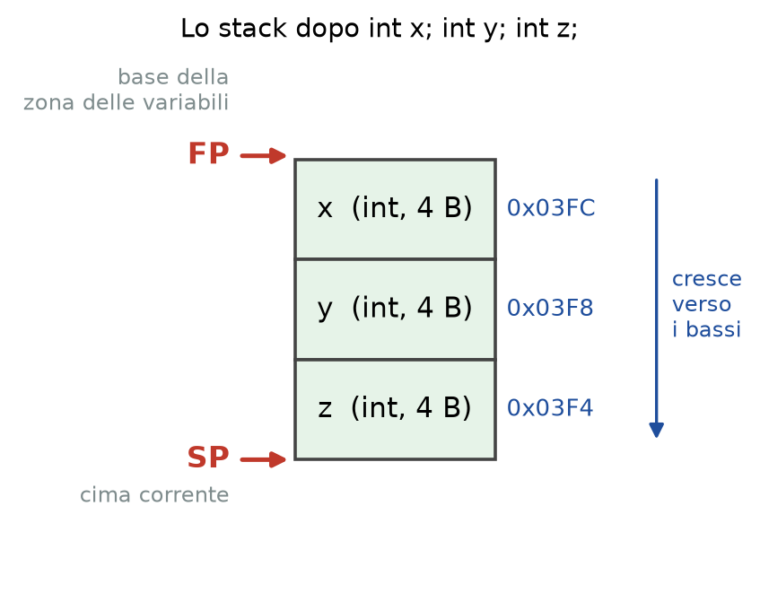
Lo stack con FP e SP dopo tre dichiarazioni.
Dichiarare una variabile riserva lo spazio di memoria necessario, ma non vi scrive alcun valore predefinito. Pertanto, il contenuto iniziale di una variabile locale non inizializzata è indeterminato (indicato negli schemi concettuali con il simbolo ?), in quanto mantiene i bit residui lasciati da precedenti elaborazioni della RAM.
Scope, Lifetime e Problema dello Stack Overflow
La gestione dello stack disciplina due proprietà fondamentali delle variabili: la visibilità logica nel sorgente e la permanenza fisica nella memoria.
Visibilità (Scope): indica la porzione di codice all'interno della quale l'identificatore della variabile è accessibile e utilizzabile. Le variabili locali (dette anche automatiche) hanno uno scope locale: sono visibili ed utilizzabili esclusivamente all'interno del blocco di codice delimitato dalle parentesi graffe { ... } in cui sono state dichiarate.
In parole povere: lo scope è «da dove si vede» una variabile: una variabile locale esiste, per il codice, solo dentro le graffe del blocco in cui l'hai dichiarata. Fuori da quelle graffe il suo nome non si può usare, come un oggetto chiuso in una stanza che si usa solo se si è dentro.
Durata (Lifetime): definisce l'intervallo temporale di esecuzione in cui la variabile esiste fisicamente allocata nello stack. La vita di una variabile automatica inizia al momento della sua dichiarazione nel blocco e termina quando l'esecuzione esce da quel blocco, momento in cui lo spazio occupato sullo stack viene rilasciato riavanzando lo Stack Pointer (SP).
In parole povere: il lifetime (durata) è «per quanto tempo esiste davvero» una variabile in memoria: nasce quando viene dichiarata e muore quando si esce dal blocco, momento in cui lo spazio sullo stack torna libero. Lo scope dice dove puoi nominarla, il lifetime dice quando esiste: per le variabili locali coincidono.
Il Rischio dello Stack Overflow
Poiché lo spazio dell'area dati riservato allo stack ha una dimensione massima prefissata dal sistema operativo, la quantità di memoria allocabile per le variabili è finita. Se il programma tenta di allocare una quantità di variabili locali che supera la capienza dello stack, il registro Stack Pointer (SP) supera i limiti dell'area consentita, generando un errore critico a runtime di stack overflow che causa l'interruzione immediata del programma.
In parole povere: lo stack overflow è lo stack che «trabocca»: la pila ha una capienza massima e, se ci metti troppe variabili, esce dallo spazio concesso e il programma viene interrotto con un errore. È come impilare piatti fino a far cadere tutto.
Capitolo 8: L'Istruzione di Assegnamento, Espressioni Aritmetiche e Input/Output Formattato
L'Istruzione di Assegnamento e la Semantica Lvalue / Rvalue
L'assegnamento è l'operazione fondamentale della programmazione imperativa che permette di modificare lo stato del programma sovrascrivendo il valore memorizzato in una cella di memoria RAM. La sintassi generale dell'assegnamento in C è espressa nella forma:
variabile = espressione;
L'operatore di assegnamento = impone una rigorosa distinzione semantica tra il lato sinistro e il lato destro dell'istruzione:
Lato sinistro (Lvalue - left value): deve identificare una locazione di memoria fisica modificabile (ovvero un'area dello stack riservata a una variabile) destinata a contenere il risultato.
Lato destro (Rvalue - right value): rappresenta un valore costante o una formula algebrica complessa che viene preventivamente calcolata e valutata dal sistema (evaluated).
Meccanismo esecutivo: una volta completata la valutazione dell'Rvalue, il valore calcolato viene copiato direttamente nella cella di memoria RAM associata all'Lvalue.
In parole povere: l'assegnamento è l'azione «metti questo valore in quella scatola»: il valore di prima viene cancellato e sostituito. A sinistra del segno = ci vuole una scatola (lvalue: la variabile che riceve), a destra ciò che si calcola (rvalue: un numero o un'operazione). Prima si calcola il lato destro, poi il risultato viene copiato nella scatola di sinistra. Per questo 5 = x non ha senso: 5 non è una scatola.
int a, b, c;
a = 10; // 10 e' un Rvalue costante; 'a' e' l'Lvalue che riceve il valore
b = a + 5; // 'a + 5' viene prima valutato (15) e poi copiato nella cella di 'b'
Forme di Assegnamento e Operatori Composti
Il linguaggio C contempla diverse modalità di assegnamento:
Inizializzazione contestuale: assegna un valore alla variabile nello stesso istante della sua dichiarazione (es. int x = 10;).
Assegnamento successivo: viene eseguito su una variabile già dichiarata in un momento precedente del codice (es. int x; x = 10;).
Assegnamento multiplo: consente di assegnare lo stesso valore a più variabili all'interno di un'unica istruzione concatenata (es. a = b = c = 0;).
Assegnamento da input: acquisisce il valore direttamente dall'esterno mediante funzioni della libreria standard (es. scanf()).
Per combinare un'operazione algebrica con la scrittura del risultato nella medesima variabile, si utilizzano gli operatori di assegnamento composti:
| Operatore composto | Espansione equivalente | Esempio in C | Esito (x parte da 5) |
|---|---|---|---|
| += | x = x + y; | x += 3; | x diventa 8 |
| -= | x = x - y; | x -= 2; | x diventa 3 |
| *= | x = x * y; | x *= 4; | x diventa 20 |
| /= | x = x / y; | x /= 5; | x diventa 1 |
| %= | x = x % y; | x %= 3; | x diventa 2 |
Per incrementare o decrementare una variabile intera di una singola unità si usano gli operatori unari di incremento (++) e decremento (--):
x++; // Equivalente all'istruzione: x = x + 1; oppure x += 1;
x--; // Equivalente all'istruzione: x = x - 1; oppure x -= 1;
Traduzione in Istruzioni Macchina e Mappatura dello Stack
z = x + y; // Assegnamento del risultato dell'espressione
L'istruzione z = x + y; non può essere eseguita direttamente dalla RAM. Il compilatore la traduce nelle seguenti istruzioni assembly (poi tradotte in codice macchina), eseguite dalla CPU:
LOAD, R0, @x: il valore di x (5) viene letto dallo stack e caricato nel registro interno R0.
LOAD, R1, @y: il valore di y (2) viene letto dallo stack e caricato nel registro interno R1.
ADD, R0, R1: l'Unità Aritmetico-Logica (ALU) esegue la somma tra i registri (5 + 2 = 7) e salva il risultato in R0.
STORE, R0, @z: il valore aggiornato contenuto in R0 (7) viene scritto nella cella dello stack riservata alla variabile z.
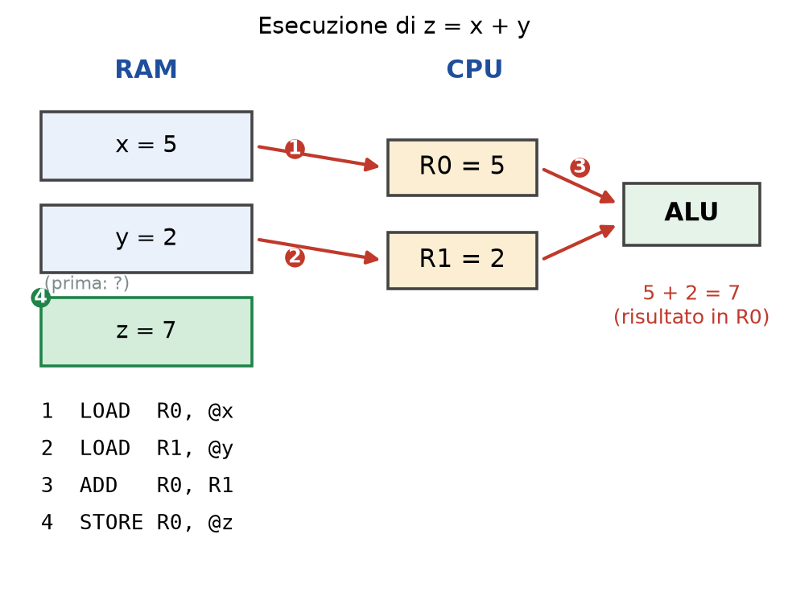
Esecuzione di z = x + y: due LOAD, ADD, STORE.
[ STATO DELLO STACK DI MEMORIA ]
Indirizzo Alto ┌───────────────────────────┐ <--- Frame Pointer (FP)
│ Variabile x (int): 5 │
├───────────────────────────┤
│ Variabile y (int): 2 │
├───────────────────────────┤
│ Variabile z (int): 7 │ <--- Risultato di (5 + 2)
Indirizzo Basso └───────────────────────────┘ <--- Stack Pointer (SP)
Stampa Formattata tramite printf()
La funzione printf() permette di stampare testo a terminale intercalando i valori attuali delle variabili attraverso la stringa di formato e gli specificatori di conversione:
printf("Le variabili x, y e z valgono %d, %d e %d\n", x, y, z);
| Tipo di Dato | Specificatore di Conversione | Descrizione |
|---|---|---|
| char | %c | Singoli caratteri ASCII. |
| short | %hd | Numeri interi con segno a 16 bit. |
| int | %d | Numeri interi con segno standard (32 bit). |
| long | %ld | Numeri interi estesi. |
| size_t | %zu | Dimensioni restituite dall'operatore sizeof. |
| float | %f | Numeri reali in virgola mobile. |
| double | %lf | Numeri reali a doppia precisione. |
È possibile specificare l'ampiezza e la formattazione della stampa aggiungendo cifre tra % e lo specificatore:
%6d: allinea il valore a destra occupando un'ampiezza minima di 6 caratteri (padding con spazi a sinistra).
%06d: allinea il valore a destra riempiendo gli spazi vuoti con zeri iniziali (zeroing, ad esempio 7 diventa 000007).
Lettura da Tastiera tramite scanf() e l'Operatore di Indirizzo &
La funzione scanf() legge i caratteri digitati dall'utente sul terminale, li converte nel tipo specificato e li memorizza nella RAM.
A differenza di printf(), la funzione scanf() richiede l'uso tassativo dell'operatore di indirizzo & anteposto all'identificatore della variabile:
int n;
printf("Inserisci un numero intero: ");
scanf("%d", &n); // Passa a scanf l'indirizzo di memoria di 'n' nello stack
L'operatore & ricava l'indirizzo fisico di memoria RAM in cui la variabile n è allocata nello stack. Passare l'indirizzo anziché il semplice valore consente a scanf() di individuare esattamente la cella di memoria da sovrascrivere con l'input fornito dall'utente.
Capitolo 9: Il Referenziamento e l'Indirizzo delle Variabili
L'indirizzo di una variabile
Nel modello di Von Neumann ogni variabile è memorizzata nella memoria centrale e occupa una certa quantità di byte. Per identificarla, la CPU usa il suo indirizzo di memoria: un numero senza segno e univoco, analogo al numero civico di una casa. Per compattezza un indirizzo si visualizza di solito in formato esadecimale (ad esempio 0x7fffd0624e0c).
In parole povere: l'indirizzo di una variabile è il suo numero civico nella memoria: dice in quale casella (byte) comincia. Il valore dice che cosa c'è dentro la casa, l'indirizzo dice dove si trova la casa. Di solito si scrive in esadecimale.
Il linguaggio C permette di ottenere questo indirizzo tramite l'operatore di referenziamento & (ampersand). L'espressione &x si legge "l'indirizzo della variabile x". L'operatore era già comparso nel capitolo 8, nella lettura con scanf: qui lo studiamo in dettaglio.
In parole povere: l'operatore & (referenziamento) si pone davanti a una variabile e significa «dammi il suo indirizzo». Se x è una variabile, &x non è il contenuto della scatola ma l'indirizzo di dove sta la scatola.
Valore e indirizzo sono informazioni diverse
Ogni variabile ha due caratteristiche distinte: un valore e un indirizzo. Dato il codice:
int main(void) {
int x = 5;
}
Qui x è il valore, cioè il contenuto della cella di memoria (5), mentre &x è l'indirizzo, cioè la posizione della cella in memoria (nello schema del corso, 0x03FC). Le due espressioni non vanno confuse: indicano cose diverse.
Perché è utile conoscere gli indirizzi
Poter nominare l'indirizzo di una variabile permette di scrivere istruzioni del tipo "moltiplica due numeri e memorizza il risultato in questa cella di memoria" oppure "leggi da tastiera un numero e memorizzalo nello spazio di memoria di una certa variabile". Ma c'è di più:
è indispensabile per lavorare con i puntatori, cioè variabili il cui valore è un indirizzo di memoria;
rende possibile gestire la memoria dinamica, le strutture dati complesse e la comunicazione efficiente tra funzioni.
Per cominciare ci limitiamo a un uso semplice: stampare gli indirizzi a video. (Come nelle slide, negli esempi si omette la riga #include <stdio.h>, necessaria per usare printf e scanf.)
Stampare un indirizzo con %p
La funzione printf usa lo specificatore di conversione %p per mostrare un indirizzo, normalmente in forma esadecimale:
int main(void) {
int x = 5;
int y = 2;
int z = x + y;
printf("La var x all'indirizzo %p vale %d \n", &x, x);
printf("La var y all'indirizzo %p vale %d \n", &y, y);
printf("La var z all'indirizzo %p vale %d \n", &z, z);
}
Un'esecuzione possibile produce:
La var x all'indirizzo 0x7fffd0624e0c vale 5
La var y all'indirizzo 0x7fffd0624e08 vale 2
La var z all'indirizzo 0x7fffd0624e04 vale 7
Si nota che le variabili dichiarate dopo hanno indirizzi più bassi, e che i tre interi da 4 byte occupano celle contigue: è coerente con il modello dello stack usato nel corso, che si sviluppa verso indirizzi decrescenti (capitolo 7).
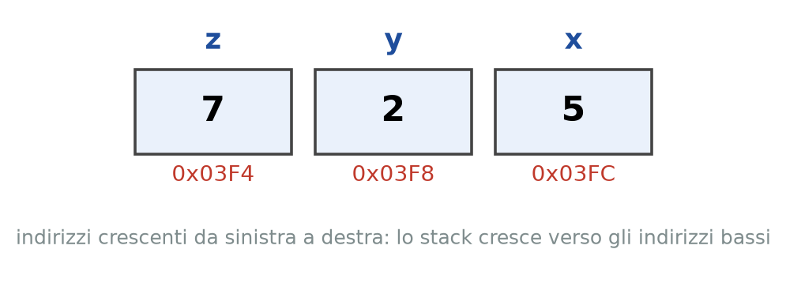
Gli indirizzi di x, y e z nello schema del corso.
Il formato concreto degli indirizzi
Il valore concreto di un indirizzo dipende dalla piattaforma e dalla singola esecuzione del programma; di solito è un numero molto grande (i dettagli si vedono nel corso di Sistemi Operativi). Per questo il valore stampato non deve mai essere incorporato nella logica del programma.
Negli esempi del corso si usano indirizzi simbolici più corti, come 0x03FC, 0x03F8 e 0x03F4, per rendere leggibili gli schemi della memoria. Ciò che conta non è il valore numerico dell'indirizzo, ma il fatto che identifichi una posizione in memoria.
Capitolo 10: L'Input da Tastiera con scanf()
Perché scanf ha bisogno dell'indirizzo
Un programma non deve solo mostrare risultati, ma spesso anche ricevere dati dall'utente. In C questo si fa con la funzione scanf() (le basi sono nel capitolo 8, qui ne approfondiamo il funzionamento), che legge i valori digitati da tastiera e li memorizza direttamente in variabili. Per leggere un intero in una variabile x già dichiarata si scrive:
scanf("%d", &x);
Passando l'indirizzo &x, si permette a scanf() di sapere in quale cella di memoria scrivere il dato letto. La funzione termina quando l'utente ha inserito l'input e preme INVIO.
Un esempio passo per passo
Nel programma seguente le tre variabili occupano, nello schema del corso, gli indirizzi 0x03FC (x), 0x03F8 (y) e 0x03F4 (z):
int main(void) {
int x, y, z;
printf("Inserisci x: ");
scanf("%d", &x);
printf("Inserisci y: ");
scanf("%d", &y);
z = x + y;
printf("%d + %d = %d\n", x, y, z);
}
Ecco come cambia la memoria durante l'esecuzione:
all'inizio x, y e z hanno un valore indeterminato (nello schema, "?");
se l'utente digita 5, la prima scanf scrive 5 nella cella di x;
se poi digita 2, la seconda scanf scrive 2 nella cella di y;
l'assegnamento calcola z = 7 e l'ultima printf stampa "5 + 2 = 7".
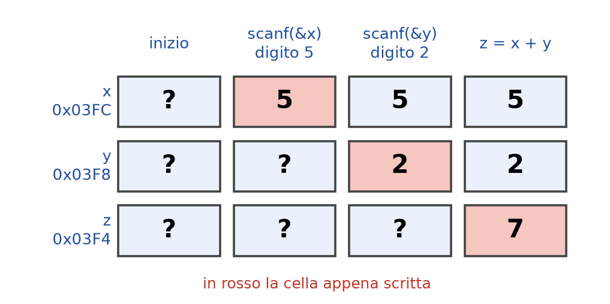
Lo stato della memoria durante l'esecuzione del programma con scanf.
Leggere più valori con una sola chiamata
Con una sola scanf si possono leggere più valori, indicando più specificatori e più indirizzi:
scanf("%d%d", &x, &y);
L'utente può separare i due numeri con uno o più caratteri di spaziatura (ad esempio "5 2").
Il valore di ritorno e i limiti di scanf
La gestione dell'input è un punto critico: l'utente può sempre inserire valori sbagliati o incompleti. La funzione scanf() prova a interpretare l'input in base al formato specificato e, se incontra un dato incompatibile (per esempio un carattere al posto di un numero), smette di leggere e restituisce il numero di valori letti con successo, che può essere minore di quelli attesi. Per esempio, dopo
int x, y;
int n = scanf("%d%d", &x, &y);
se n vale 2, entrambi i valori sono stati letti correttamente;
se n vale 1, solo il primo valore era valido;
se n vale 0, nessun valore è stato letto e le variabili non sono state aggiornate.
Vediamo il comportamento con un programma che legge un solo intero e stampa quanti valori ha letto:
int main(void) {
int x;
printf("Inserisci un intero: ");
int n = scanf("%d", &x);
printf("Valori letti correttamente: %d\n", n);
printf("x vale %d \n", x);
}
con input 1234, scanf legge 1234 e restituisce 1;
con input 1234.56, il formato %d si aspetta un intero: viene letto "1234" e ".56" rimane non consumato nell'input; n vale 1 e x vale 1234;
con input A, la lettera non si può interpretare come numero decimale: n vale 0 e x non viene aggiornata. Poiché x non era stata inizializzata, la printf tenta di leggere un valore indeterminato e il comportamento del programma è indefinito.
Dichiarare avere un valore, avere un indirizzo, essere inizializzata
L'ultimo esempio mette in luce quattro nozioni da tenere distinte: la dichiarazione di una variabile, il suo valore, il suo indirizzo e il fatto che il valore sia stato inizializzato. In particolare è lecito ottenere &x anche se x non è ancora inizializzata: stiamo usando l'indirizzo di x e non leggendo il suo valore. Ma se x non viene inizializzata (in questo caso da scanf), non si può assumere nulla sul suo valore.
Se invece x era stata inizializzata, per esempio con int x = -1, e l'input non è interpretabile secondo la specifica di conversione, la variabile non viene modificata e conserva il suo valore (nell'esempio, resta -1). Se scanf non aggiorna una variabile non inizializzata, il suo valore resta indeterminato.
Buona pratica: conviene sempre controllare il valore restituito da scanf prima di usare le variabili lette. Per capire fino in fondo perché scanf richiede un indirizzo servono i puntatori, che vediamo nel prossimo capitolo.
Capitolo 11: I Puntatori
Il puntatore come tipo di dati
Un puntatore è una variabile che memorizza l'indirizzo di memoria di un'altra variabile, detta variabile puntata. Il valore contenuto in un puntatore è quindi un indirizzo, anziché direttamente il dato puntato. Se per esempio la variabile int x = 5 ha indirizzo &x pari a 0x03FC, ci serve un posto dove memorizzare 0x03FC: quel posto è una variabile puntatore.
In parole povere: un puntatore è una variabile speciale che non contiene un dato normale ma l'indirizzo di un'altra variabile. È come un biglietto con scritto «la chiave è al numero 12»: non è la chiave, ma ti dice dove andare a prenderla. La variabile a cui punta è quella «puntata».
In C, per ciascun tipo di dati T esiste il corrispondente tipo puntatore T* ("T star"): le variabili di tipo T* servono a memorizzare gli indirizzi delle variabili di tipo T. Per esempio:
int è il tipo delle variabili intere;
int* è il tipo delle variabili puntatore che possono contenere indirizzi di variabili int;
float* è il tipo dei puntatori a float.
In parole povere: per ogni tipo T esiste il tipo T*, «puntatore a T»: un puntatore a int può contenere solo indirizzi di variabili int, uno a float solo indirizzi di float. Il tipo ricorda al compilatore che genere di dato troverà arrivando a quell'indirizzo, come l'etichetta «qui si trovano uova» su uno scaffale.
int x = 5;
int* pX;
Qui x è una variabile di tipo int e pX è una variabile "puntatore agli interi", di tipo int*. Per convenzione si usa spesso il prefisso p nei nomi dei puntatori. Attenzione: dopo la sola dichiarazione, pX non contiene ancora un indirizzo valido da usare.
L'operatore di referenziamento e l'assegnamento a un puntatore
L'operatore & (address-of), applicato a una variabile, ne restituisce l'indirizzo con tipo "puntatore al tipo della variabile". Possiamo allora inizializzare il puntatore:
int x = 5;
int* pX = &x; // pX riceve l'indirizzo di x
Le tre espressioni si interpretano così:
x è una variabile intera, di valore 5;
&x è un'espressione che vale l'indirizzo di x, di tipo int* (se x è int, allora &x è int*);
pX è un puntatore a intero che memorizza l'indirizzo di x.
L'operatore & va applicato a qualcosa che identifica una posizione di memoria: non si può applicare a un semplice valore né al risultato temporaneo di un calcolo. Sono quindi errori:
&5 // ERRORE
&(x + 1) // ERRORE
Un puntatore è una variabile come le altre
Nello schema della memoria la variabile x contiene il valore 5 all'indirizzo 0x03FC, mentre la variabile pX contiene 0x03FC, cioè l'indirizzo di x, e si trova a sua volta a un indirizzo proprio (nell'esempio 0x03F8). Un puntatore contiene un indirizzo, ma essendo una variabile occupa memoria e ha anche un suo indirizzo. L'assegnamento pX = &x è corretto perché &x e pX hanno lo stesso tipo, int*.
Per vederlo si possono stampare sia l'indirizzo del puntatore (&pX) sia il suo valore (pX):
int main(void) {
int x = 5;
int* pX;
pX = &x;
printf("Il ptr pX all'ind %p vale %p \n", &pX, pX);
}
Con gli indirizzi simbolici dello schema, l'output sarebbe "Il ptr pX all'ind 0x03F8 vale 0x03FC".
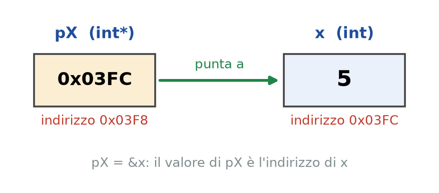
Il puntatore pX contiene l'indirizzo di x.
Due errori tipici
Usare &x prima di aver dichiarato x: il compilatore segnala un errore ("'x' undeclared"), perché al momento di int* pX = &x la variabile x non esiste ancora.
Tipi incompatibili: se x è un float, &x ha tipo float* e non è compatibile con una variabile int*; il compilatore avverte con un warning ("initialization of 'int *' from incompatible pointer type 'float *'"). Nei compilatori più recenti (ad esempio GCC 14) questo caso è invece un errore di compilazione.
Come si scrive la dichiarazione
Finora abbiamo scritto int* pX, ma è in uso frequente anche la convenzione int *pX. Il simbolo * ha anche un altro significato nelle operazioni sui puntatori, il dereferenziamento, che vediamo nel prossimo capitolo.
scanf riletta con i puntatori
La documentazione di scanf richiede che ogni conversione riceva un puntatore al tipo appropriato: per %d serve un int*. Con int x, l'espressione &x ha proprio tipo int*, ed è per questo che scanf("%d", &x) funziona: scanf può scrivere in quella cella il valore letto. Ma allora al posto di &x si può passare direttamente un puntatore che contiene lo stesso indirizzo:
int main(void) {
int x;
int* pX = &x;
printf("Inserisci un intero: ");
scanf("%d", pX);
printf("La var x all'ind %p vale %d \n", pX, x);
}
L'assegnamento pX = &x è lecito anche se x non è ancora inizializzata (si usa l'indirizzo, non il valore). Dopo che l'utente ha digitato 5, la cella di x contiene 5, e la printf mostra l'indirizzo contenuto in pX e il valore di x.
Capitolo 12: Dereferenziamento, Alias e Puntatore Nullo
L'operatore di dereferenziamento *
L'operatore unario asterisco (*) (dereference o indirect access) permette di accedere alla variabile puntata attraverso l'indirizzo memorizzato nel puntatore. Dereferenziare un puntatore significa usare l'indirizzo che contiene per accedere indirettamente alla variabile puntata. Per esempio:
int y = 5;
int* pY = &y;
printf("%d", *pY);
Qui *pY accede alla stessa cella di memoria di y, perché pY ne contiene l'indirizzo. Il tipo segue una regola semplice: se un puntatore p ha tipo T*, allora l'espressione *p ha tipo T. Negli esempi di questo capitolo si alternano le scritture int* pX e int *pX, equivalenti.
In parole povere: dereferenziare un puntatore vuol dire «seguire il biglietto»: usare l'indirizzo che contiene per andare davvero alla variabile puntata. Se pY contiene l'indirizzo di y, *pY è y stessa: puoi leggerne il valore o cambiarlo. Il simbolo * davanti al puntatore significa «ciò che c'è a quell'indirizzo».
Leggere e modificare tramite il puntatore
Con int x = 5; e int* pX = &x; si può accedere alla variabile puntata in due modi:
in lettura: printf("%d\n", *pX) stampa 5, il valore della variabile puntata, come x;
in modifica: *pX = 10; assegna un nuovo valore alla variabile puntata; dopo l'istruzione x vale 10.
int x = 5;
int *pX = &x;
printf("x = %d\n", x); // stampa 5
printf("*pX = %d\n", *pX); // stampa ancora 5
*pX = 10; // modifica x tramite pX
printf("x = %d\n", x); // stampa 10
x e *pX accedono alla stessa cella, quindi leggono lo stesso valore: scrivere in *pX modifica x.
Riferimenti multipli e aliasing
Due puntatori possono contenere lo stesso indirizzo:
int x = 5;
int* pX = &x;
int* pXbis = pX;
*pXbis = 1234;
printf("x = %d\n", x); // 1234
printf("*pX = %d\n", *pX); // 1234
printf("*pXbis = %d\n", *pXbis);// 1234
La scrittura su *pXbis avviene nella cella di x: x, *pX e *pXbis indicano la stessa variabile (*pX e *pXbis sono alias di x). pX e pXbis sono due variabili puntatore diverse, ma contengono lo stesso indirizzo. Di conseguenza le tre istruzioni scanf("%d", &x), scanf("%d", pX) e scanf("%d", pXbis) sono equivalenti: indicano sempre la stessa cella.
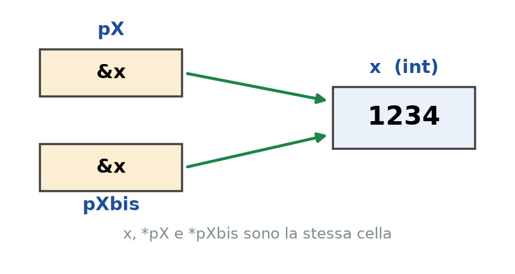
Aliasing: due puntatori alla stessa variabile.
Questo fenomeno si chiama aliasing. Quando si dichiara una variabile in C, essa è accessibile tramite un solo nome simbolico (x). Con i puntatori più "etichette" possono invece fare riferimento allo stesso dato: sia il nome diretto della variabile, sia uno o più puntatori che ne contengono l'indirizzo. Modificando la variabile attraverso uno degli alias, anche gli altri "vedono" il nuovo valore, perché accedono allo stesso indirizzo.
In parole povere: aliasing vuol dire che la stessa variabile ha più «nomi» per raggiungerla: la variabile stessa (x) e tutti i puntatori che ne contengono l'indirizzo. È come una persona con un nome e un soprannome: se qualcuno cambia qualcosa passando dal soprannome, il cambiamento lo vedi anche chiamandola per nome, perché è la stessa persona.
Puntatori non inizializzati e puntatore nullo
Si può dereferenziare un puntatore solo se contiene un indirizzo valido. Dopo la sola dichiarazione, un puntatore ha un valore indeterminato, come ogni variabile automatica non inizializzata, e quel valore non può essere usato come indirizzo: dereferenziarlo è un errore a tempo di esecuzione (comportamento indefinito).
int* pX; // non inizializzato
*pX = 10; // ERRORE
Per dare a un puntatore un valore esplicito che significa "non punta a niente" si usa NULL, valore di puntatore che indica che quel puntatore non fa riferimento ad alcuna variabile. Si usa come valore di inizializzazione o come valore sentinella:
int main(void) {
int *p = NULL; // inizializzazione sicura
*p = 10; // ERRORE: p non contiene un indirizzo accessibile
}
NULL consente di inizializzare esplicitamente un puntatore, evitando un valore indeterminato, e di riconoscere esplicitamente il caso "non punta ad alcuna variabile". Attenzione: dereferenziare un puntatore NULL produce un comportamento indefinito (in genere un errore che termina il programma).
In parole povere: NULL è il valore «non punto a niente»: un biglietto lasciato volutamente in bianco, invece di uno con un indirizzo qualsiasi lasciato dal caso. Meglio un puntatore dichiaratamente vuoto che uno con un valore casuale, ma attenzione: provare a seguirlo (dereferenziarlo) manda in errore il programma.
La dimensione di un puntatore
Un puntatore occupa memoria come ogni variabile, ma la sua dimensione dipende dalla piattaforma e non dalla dimensione del tipo puntato. Su una tipica CPU a 64 bit un puntatore occupa 8 byte, su una tipica CPU a 32 bit 4 byte:
int x;
int* pX;
printf("sizeof(x) %zu B\n", sizeof(x)); // 4 B
printf("sizeof(pX) %zu B\n", sizeof(pX)); // 8 B su piattaforma a 64 bit
& e * sono operazioni complementari
Se int a = 7; e int* pA = &a;, allora l'indirizzo di a, il valore di pA, &*pA e *&pA coincidono, mentre a e *pA valgono entrambi 7: gli operatori & e * si "annullano" a vicenda.
I diversi usi del simbolo *
Il simbolo * (star) si usa in C con quattro significati:
1. operatore di moltiplicazione: int x = a * b;
2. dichiarazione di una variabile di tipo puntatore: int* pX = &x;
3. dereferenziamento di un puntatore: int x = *pX;
4. puntatore a puntatore (non trattato nel corso): int** ppX = &pX; pX = *ppX; **ppX = 10;
Distinguere il contesto in cui compare l'asterisco è il modo per non confondere questi usi. I puntatori sono la base per gestire la memoria dinamica, le strutture dati complesse e la comunicazione efficiente tra funzioni.
Capitolo 13: Scambio di Variabili e Variabile Temporanea
Il problema dello scambio
Lo scambio (in inglese swap) dei valori di due variabili è un'operazione fondamentale in programmazione, usata in molti algoritmi, per esempio nel bubble sort. Sembra banale, ma il metodo più ovvio e intuitivo non funziona, e capire perché è un buon modo per fissare che cosa fa davvero un assegnamento.
Per introdurre il problema si usa un'analogia. Abbiamo due tazze (le chiameremo X e Y), una con tè verde e una con tè nero, e vogliamo scambiarne il contenuto. Non possiamo versare direttamente una tazza nell'altra, perché i due tè si mescolerebbero. Una soluzione c'è: usare altre due tazze vuote, travasarci i due tè e poi rimetterli ciascuno nella tazza opposta. Funziona, ma non è efficiente, perché usa il doppio dello spazio. Si può fare meglio con una sola tazza ausiliaria A:
1. si versa il tè verde nella tazza vuota;
2. si versa il tè nero nella tazza che era del tè verde;
3. si versa infine il tè verde, che aspettava nella tazza ausiliaria, nella tazza che era del tè nero.
Questa soluzione funziona ed è efficiente, ma la sequenza dei travasi deve avvenire nell'ordine giusto: con un ordine diverso uno dei due tè andrebbe perso. Con le variabili vale lo stesso, e la tazza ausiliaria diventerà una variabile d'appoggio.
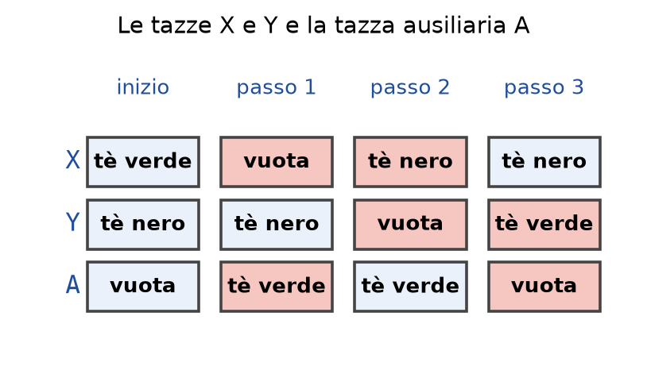
Lo scambio delle tazze con una sola tazza ausiliaria (in rosso le tazze il cui contenuto è cambiato).
Lo scambio con variabile temporanea
Per scambiare correttamente i valori di due variabili serve una terza variabile di supporto, dello stesso tipo, che conservi temporaneamente uno dei due valori. Questo metodo si chiama scambio con variabile temporanea (o variabile d'appoggio) ed è l'esatto equivalente della tazza ausiliaria. I passi sono tre:
1. si salva il valore di x nella variabile d'appoggio;
2. si copia il valore di y in x;
3. si copia in y il valore conservato nella variabile d'appoggio.
In parole povere: la variabile temporanea (o d'appoggio) è una scatola in più usata solo per parcheggiare un valore un momento, così non va perso quando ne sovrascrivi un altro. Come la tazza vuota per scambiare due tè: prima versi un tè nella tazza vuota, poi sposti l'altro, poi versi dalla tazza d'appoggio.
I nomi tipici delle variabili d'appoggio sono temp, aux, prevX, savedX, backup.
int main(void) {
int x = 5;
int y = 2;
int temp;
temp = x; // 1: salvo il vecchio valore di x
x = y; // 2: ora posso sovrascrivere x
y = temp; // 3: recupero il valore salvato
printf("Le var x, y valgono %d, %d\n", x, y);
}
Sullo stack, la dichiarazione int temp; alloca altri 4 byte con valore indeterminato (il simbolo "?" con cui si indica un contenuto indeterminato, come visto nel capitolo 7). Poi, passo per passo:
temp = x; copia 5 in temp: ora il valore originale di x esiste in due celle;
x = y; sovrascrive x con 2, ma questa volta nessuna informazione è persa, perché il 5 è al sicuro in temp;
y = temp; copia in y il 5 salvato.
Il programma stampa Le var x, y valgono 2, 5: i valori sono stati scambiati.
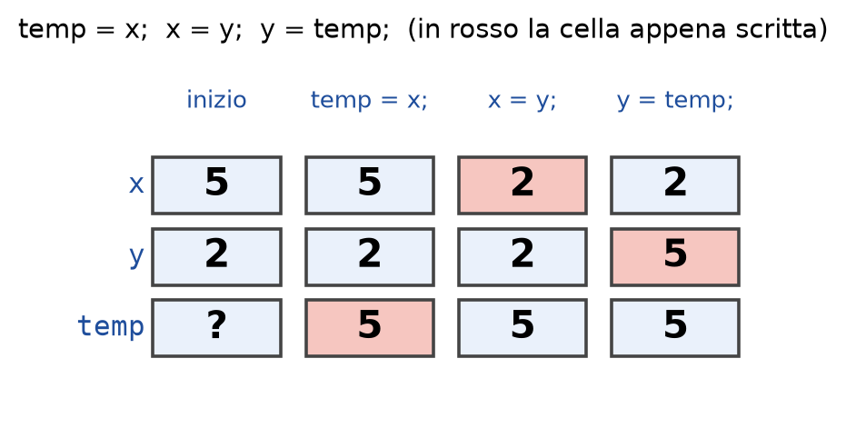
Scambio con variabile temporanea: il 5 resta al sicuro in temp finché y non lo riceve (in rosso le celle il cui valore è cambiato).
Perché l'ordine conta
Come nell'esempio delle tazze, la sequenza dei tre assegnamenti non si può cambiare a piacere: ogni assegnamento deve avvenire quando il valore che sta per essere sovrascritto è già stato salvato altrove. Per esempio, scrivendo x = y; temp = x; y = temp; si copia in temp un valore di x che è già stato sovrascritto, e alla fine x, y e temp valgono tutti 2: il 5 è stato perso proprio come nel metodo ovvio.
Il prezzo della soluzione corretta è piccolo: una sola variabile in più, cioè 4 byte per degli int, a fronte di un'operazione che il metodo ovvio non sa fare. Lo scambio con variabile temporanea sarà utile ogni volta che un algoritmo dovrà riordinare dei valori; nel prossimo capitolo passiamo invece ai numeri reali, con i tipi float e double.
Capitolo 14: Numeri Reali in C: float, double e Formati di Stampa
I tipi per i numeri reali
Nel calcolo scientifico e in moltissime applicazioni pratiche (grafica, simulazioni, elaborazione di dati) occorre lavorare con numeri reali, cioè con valori che hanno una parte intera e una parte frazionaria. In C sono rappresentati principalmente da due tipi: float, tipicamente a 32 bit, e double, tipicamente a 64 bit. Hanno entrambi una codifica in virgola mobile, che segue lo standard IEEE 754, argomento che si vedrà nel corso di Fondamenti dell'Informatica. Come già osservato nel capitolo 6, sono modelli finiti dei numeri reali: i due tipi si distinguono proprio per la precisione e per l'intervallo di valori che riescono a rappresentare.
float: 32 bit (4 byte), circa 7 cifre decimali di precisione, valori da circa 10-38 a circa 1038. È adatto quando serve risparmiare memoria o per calcoli meno critici.
double: 64 bit (8 byte), circa 15-16 cifre decimali, valori da circa 10-308 a circa 10308. È il tipo per i calcoli scientifici e per le applicazioni che richiedono alta precisione.
In parole povere: float e double sono i tipi per numeri con la virgola. Il float usa 32 bit (circa 7 cifre giuste), il double 64 bit (circa 15-16 cifre giuste): il double è più preciso e arriva più lontano, ma occupa il doppio. Sono numeri «in virgola mobile»: la virgola si sposta, come nella notazione scientifica, e proprio per questo il numero è solo un'approssimazione.
Sui numeri reali valgono le quattro operazioni aritmetiche: addizione (+), sottrazione (-), moltiplicazione (*) e divisione (/). Non c'è invece l'operatore modulo (%), che in C è definito solo per gli interi: esiste una funzione di libreria con questo scopo, chiamata fmod, ma il corso non la userà.
float e double in memoria
Vediamo un primo esempio. Il programma calcola la divisione tra due variabili reali e stampa i tre valori:
int main(void) {
float x = 5, y = 2, z;
z = x / y;
printf("La var x vale %f\n", x);
printf("La var y vale %f\n", y);
printf("La var z vale %f\n", z);
}
L'output è La var x vale 5.000000, La var y vale 2.000000 e La var z vale 2.500000. Poiché gli operandi sono reali, la divisione mantiene la parte frazionaria: 5 / 2 dà 2.5. In memoria ciascuna delle tre variabili float occupa 4 byte. Se si sostituisce float con double il risultato stampato è identico, ma ogni variabile occupa 8 byte (64 bit). I due tipi si possono anche mescolare: se x e y sono float e z è un double, la divisione tra x e y dà comunque 2.5, che viene memorizzato in una variabile da 8 byte.
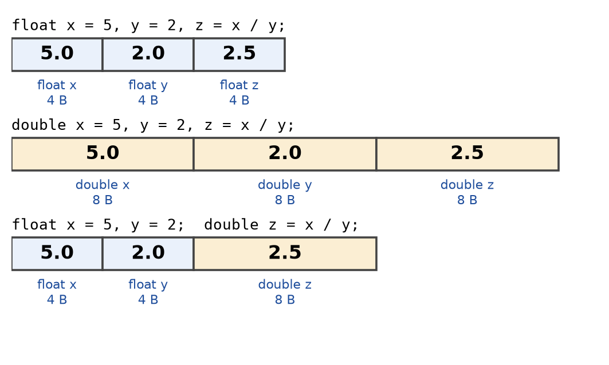
float e double in memoria: stesse operazioni, ma 4 byte per ogni float e 8 byte per ogni double.
Stampare i numeri reali: %f, %e e %g
Per stampare un numero reale con printf si usano tre specificatori di conversione, che differiscono per la notazione. Prendiamo come esempio double z = 2.5;:
%f: notazione decimale fissa, con 6 cifre decimali di default (2.500000). È la scelta per la rappresentazione "naturale" di un numero reale.
%e: notazione scientifica o esponenziale (2.500000e+00). È utile per numeri molto grandi o molto piccoli.
%g: formato adattivo, che sceglie tra %f e %e quello più compatto ed elimina gli zeri inutili (2.5). Si usa quando serve una stampa leggibile e compatta, senza preoccuparsi della notazione; stampa al più 6 cifre significative.
Come per gli interi, dove %6d fissa la larghezza minima del campo (capitolo 8), anche qui si può controllare la formattazione: scrivendo un punto e un numero tra il simbolo % e la lettera, come in %.3f, si indica la precisione, cioè quante cifre decimali stampare. Con la stessa variabile z:
printf("z vale %f
", z); // z vale 2.500000
printf("z vale %.3f
", z); // z vale 2.500
printf("z vale %.3e
", z); // z vale 2.500e+00
Con %.3f la stampa si ferma al terzo decimale (più precisamente il valore viene arrotondato: 2.5678 con %.3f diventa 2.568); con %.3e la notazione esponenziale mostra tre decimali. Gli specificatori di printf sono descritti nel manuale della libreria C di GNU (sezione sull'output formattato), a cui conviene abituarsi a ricorrere.
Leggere i double con scanf
In printf lo specificatore %f va bene sia per i float sia per i double, ed è quello usato negli esempi precedenti. Con scanf la distinzione invece conta: per leggere un double non si possono usare %f, %e e %g, ma gli specificatori con la lettera l, cioè %lf, %le e %lg. La ragione sta nel funzionamento di scanf, che scrive direttamente nella memoria all'indirizzo passato (&x, capitolo 9) e deve sapere quanti byte occupa la variabile: 8 per un double, 4 per un float. Usare %f con un double significherebbe scriverne solo una parte, con un valore letto sbagliato. La tabella dei tipi del corso riporta coerentemente %f per il float e %lf per il double.
In sintesi, per i numeri reali si stampa con %f, %e o %g (a seconda della notazione che si vuole) e si legge con %f, %e o %g per un float e con %lf, %le o %lg per un double.
I numeri reali sono approssimati, e le conversioni tra i tipi numerici possono far perdere informazione: è il tema del capitolo 16. Il prossimo capitolo introduce invece le funzioni matematiche della libreria math.h.
Capitolo 15: La Libreria math.h e la Lettura della Documentazione
Oltre le operazioni di base
Gli operatori del C (+, -, *, / e, per gli interi, %) coprono solo le operazioni aritmetiche di base. Per le funzioni matematiche più avanzate, come radici, potenze, logaritmi e funzioni trigonometriche, si usa la libreria math.h, da includere con:
#include <math.h>
La libreria fornisce una serie di funzioni utili, tra cui sqrt() (radice quadrata), pow() (potenza), sin() e cos(), disponibili in versioni per float, double e long double (con i suffissi f e l; un argomento int viene convertito automaticamente a double). L'elenco completo è consultabile nella documentazione online della libreria (per esempio su cppreference.com, alla pagina dedicata all'header math.h).
In parole povere: una libreria è una cassetta degli attrezzi già pronta: tante funzioni scritte da altri (qui sqrt per la radice, pow per le potenze) che puoi usare senza riscriverle. Con #include dici al programma quale cassetta usare; math.h è quella della matematica.
C'è un'avvertenza pratica per chi lavora in ambiente Unix: l'uso di math.h richiede di indicare al compilatore anche la libreria matematica, con l'opzione -lm da aggiungere alla fine del comando, per esempio gcc programma.c -lm. Senza questa opzione la fase di collegamento può fallire sulle funzioni di math.h (tipicamente con un errore di "undefined reference").
Un esempio: quadrato e radice
Il programma seguente calcola il quadrato e la radice quadrata di un numero reale e li stampa con due decimali:
#include <stdio.h>
#include <math.h>
int main(void) {
float num = 9.0, radice, quadrato;
quadrato = pow(num, 2);
radice = sqrt(num);
printf("Il quadrato di %.0f è %.2f\n", num, quadrato);
printf("La radice di %.0f è %.2f\n", num, radice);
}
Qui pow(num, 2) calcola 9 elevato alla seconda, cioè 81, e sqrt(num) calcola la radice quadrata di 9, cioè 3. L'output è:
Il quadrato di 9 è 81.00
La radice di 9 è 3.00
Nella printf, %.0f stampa num senza decimali (9), mentre %.2f stampa i due risultati con due decimali (capitolo 14). Le funzioni di math.h lavorano in genere con valori double; qui il risultato viene assegnato a variabili float, con una conversione di tipo implicita di cui si parlerà nel capitolo 16.
Capitolo 16: Conversioni di Tipo: Implicite, Promozione ed Esplicite
Perché servono le conversioni
Quando in un programma si usano variabili di tipi diversi (interi, reali, caratteri), queste non hanno la stessa rappresentazione né le stesse caratteristiche. Per poterle usare in una stessa espressione, i valori devono essere trasformati in un formato compatibile: questo processo si chiama conversione di tipo. In C esistono due modalità:
le conversioni implicite, eseguite automaticamente dal compilatore;
le conversioni esplicite (dette cast), richieste in modo volontario dal programmatore.
In parole povere: la conversione di tipo è trasformare un valore da un tipo a un altro, come cambiare euro in dollari: il valore è «lo stesso» ma scritto in un altro formato, e spesso nel cambio si perde qualcosa. Implicita: la fa il compilatore da solo. Esplicita (cast): la chiedi tu.
In entrambi i casi la conversione può comportare una perdita di informazione o di precisione, ed è proprio questo il punto su cui occorre stare attenti.
Le conversioni implicite
Il C permette di combinare nella stessa espressione variabili di tipi diversi (per esempio int, float e double): il compilatore provvede da solo a uniformarli, con un meccanismo chiamato implicit casting. L'avvertenza importante è che queste conversioni possono causare perdite di precisione senza generare errori o avvisi. L'esempio tipico, già incontrato nel capitolo 6 con int y = 8.89;, è assegnare un valore float a una variabile int: la parte frazionaria viene eliminata in silenzio.
I casi principali sono questi:
int → float e int → double: la conversione è implicita e di norma non perde dati (il float può perdere precisione solo per interi molto grandi). Con int x = 5; float y = x; si ottiene y = 5.0;
float → int e double → int: la parte frazionaria va persa, senza errore. Con float x = 3.7; int y = x; y vale 3, e con double x = 9.9; int y = x; vale 9. Se il valore è fuori dall'intervallo degli interi il comportamento è indefinito;
double → float: si perde precisione. Con double a = 3.14159; float b = a; b vale circa 3.14159, ma con meno cifre affidabili;
char → int: il valore ASCII del carattere viene promosso a int. Con char c = 'A'; int x = c; x vale 65;
conversioni non compatibili: il compilatore le segnala come errore, come int x = 5; int *p = x;, che assegna un intero a un puntatore.
In parole povere: nel casting implicito è il compilatore a convertire da solo, senza chiederti niente, quando mescoli tipi diversi. Passare da int a float è sicuro; da float a int taglia i decimali (3.7 diventa 3) senza avvisare. Il pericolo è proprio che non ti dice che ha perso qualcosa.
La promozione di tipo
Quando si scrivono espressioni aritmetiche con operandi di tipo diverso, occorre capire i tipi di ciascun operando, seguendo le regole di promozione di tipo applicate dal compilatore, e valutare se la combinazione può causare una perdita di precisione o un risultato inatteso. Il principio è che i tipi "più piccoli" vengono promossi a tipi più grandi (char → short → int → long, e float → double quando l'altro operando è un double), così da ridurre la perdita di informazione. Se i tipi differiscono, il compilatore converte l'operando al tipo più ampio o più preciso. Se uno dei due è intero e l'altro reale, la promozione è a reale. Per esempio:
char + int viene promosso a int;
int + double viene promosso a double.
In parole povere: la promozione di tipo è la regola con cui il compilatore, davanti a un'operazione tra due tipi diversi, porta quello «più piccolo» al tipo più grande e preciso, così da non perdere informazioni: int + double dà double, char + int dà int. Come mettere entrambi nel contenitore più capiente prima di sommare.
La divisione tra interi
La promozione spiega un errore molto frequente. Consideriamo questo programma:
int main(void) {
int x = 5, y = 2;
float z = x / y;
printf("La var x vale %d\n", x);
printf("La var y vale %d\n", y);
printf("La var z vale %f\n", z);
}
Si potrebbe pensare che z valga 2.5, perché z è un float. Invece l'espressione x / y ha due operandi interi, quindi la divisione è una divisione tra interi e dà 2: la parte frazionaria si perde già durante la divisione. Il valore 2 viene poi assegnato a z con una conversione implicita da int a float, e z vale 2.000000. L'ultima printf stampa quindi La var z vale 2.000000.
Il contrario accade con un'altra variante:
int main(void) {
float x = 5, y = 2;
int z = x / y;
printf("La var x vale %f\n", x);
printf("La var y vale %f\n", y);
printf("La var z vale %d\n", z);
}
Ora la divisione tra float non ha problemi e dà 2.5, ma questo valore viene assegnato a una variabile int: è un casting implicito da float a int con perdita della parte frazionaria, e z vale 2. La stampa è La var z vale 2.
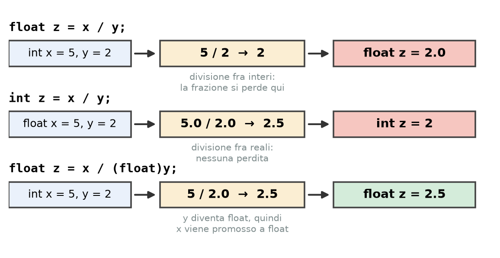
Tre divisioni con tipi diversi: dove si perde la parte frazionaria (le prime due sono quelle di questa sezione, la terza è con il cast della sezione seguente).
Le conversioni esplicite (cast)
Per decidere noi se e quando convertire si usa il cast esplicito, che si scrive indicando il tipo desiderato tra parentesi davanti all'espressione:
In parole povere: il cast esplicito è quando sei tu a dire al compilatore «tratta questo valore come di quest'altro tipo», scrivendo il tipo tra parentesi: (float)y. Riguarda solo l'espressione che sta subito a destra, e non cambia il tipo originale della variabile: ne usa una copia convertita.
int x = 5;
float z = (float)x; // x viene convertito in float
È importante quando si vuole controllare il tipo di una specifica operazione, per esempio nella divisione tra interi:
int x = 5, y = 2;
float z = x / (float)y; // y convertito a float: risultato 2.5
Qui y viene convertito esplicitamente a float; di conseguenza, per le regole di promozione, nella divisione anche il valore di x viene portato a float (la variabile x resta int) e la divisione è tra reali, quindi z vale 2.500000. Il cast evita la perdita della parte frazionaria che si avrebbe con la divisione intera x / y.
Il cast agisce solo sull'espressione immediatamente alla sua destra. In int x = 10, y = 3; float z = x / (float)y; viene convertita in float soltanto l'espressione y, mentre x resta di tipo int (nella divisione il suo valore viene poi promosso a float dalle regole viste sopra, e z vale 3.333333). Il cast cambia il tipo dell'espressione durante la valutazione, non il tipo delle variabili coinvolte: x e y rimangono interi.
Capitolo 17: Espressioni Booleane e Operatori Logici
Perché servono le condizioni
Un programma non si limita a fare calcoli: deve anche prendere decisioni. Le condizioni permettono di dire al computer "se succede questo, allora fai quello", e le espressioni booleane sono il linguaggio con cui le scriviamo. Con le espressioni booleane traduciamo domande come "il numero di somme ripetute richieste è stato raggiunto?" (il contatore dell'algoritmo di moltiplicazione del capitolo 2), "l'input da tastiera è corretto?" oppure "lo studente ha superato l'esame?". Sono il ponte tra i dati numerici e le scelte logiche: senza di esse un programma sarebbe soltanto una lunga sequenza rigida di calcoli.
In parole povere: un'espressione booleana è una domanda a cui si risponde solo sì o no (vero o falso), per esempio «x è maggiore di 18?». I programmi la usano per decidere cosa fare: è il modo di scrivere le condizioni del tipo «se ... allora ...».
Operatori relazionali e logici in C
Per scrivere le condizioni il C mette a disposizione operatori relazionali, che confrontano due valori, e operatori logici, che combinano condizioni. Accanto a ciascuno si indica la notazione matematica corrispondente:
== (uguaglianza, x = y in matematica): x == y vale 1 se i due valori sono uguali, altrimenti 0;
!= (diversità, x ≠ y): x != y vale 1 se sono diversi, altrimenti 0;
> e < (maggiore e minore): x > y e x < y valgono 1 se la relazione è vera, altrimenti 0;
>= e <= (maggiore o uguale, minore o uguale, x ≥ y e x ≤ y): valgono 1 se la relazione è vera, altrimenti 0;
&& (AND, congiunzione, b ∧ c): x > 0 && y > 0 vale 1 se entrambe le condizioni sono vere;
|| (OR, disgiunzione, b ∨ c): x == 0 || y == 0 vale 1 se almeno una delle due è vera;
! (NOT, negazione, ¬b): !(x > 0) inverte il valore logico della condizione.
In parole povere: gli operatori relazionali confrontano due valori (uguale, diverso, maggiore, minore...) e rispondono vero o falso. Gli operatori logici (AND, OR, NOT) combinano più risposte: AND vuole che siano vere entrambe («ho il biglietto E il documento»), OR ne basta una («pago in contanti O con carta»), NOT inverte. In C vero è 1 e falso è 0. Attenzione: == confronta, = assegna.
Il risultato di ogni espressione di questo tipo è quindi un numero, 1 per vero e 0 per falso. Gli operatori relazionali si usano spesso fra numeri: contatore != n verifica se le ripetizioni sono completate, pinInserito == pinCorretto confronta due codici, temperatura <= limiteMax controlla un limite e voto >= 18 verifica la sufficienza all'esame.
C'è un errore da non commettere mai: == è l'uguaglianza, mentre = è l'assegnamento (capitolo 8). Scrivere x = y dentro una condizione non confronta due valori: copia y in x, e l'espressione vale il valore copiato (se ne vedrà la conseguenza nel capitolo 20).
Il tipo bool
Le condizioni, nella logica di Boole, possono assumere solo due valori: true (vero) e false (falso). La logica di Boole, o algebra booleana, è il sistema matematico basato su questi due valori e sugli operatori fondamentali AND, OR e NOT, alla base dei circuiti digitali (le porte logiche di Fondamenti dell'Informatica) e della programmazione.
In parole povere: la logica di Boole è la «matematica del sì e del no»: esistono solo due valori, vero e falso, e tre operazioni (AND, OR, NOT) per combinarli. È la base dei circuiti dei computer e delle condizioni dei programmi.
Storicamente il C non aveva un tipo booleano fra i tipi primitivi, e si usavano gli interi con questa interpretazione: 0 è falso, un valore diverso da 0 è vero. Nel C moderno (dal C99) esiste l'header <stdbool.h>, che introduce:
il tipo bool, simile a int ma che chiarisce che la variabile è booleana;
le costanti true e false.
In parole povere: bool è il tipo delle variabili che contengono solo vero o falso, come un interruttore a due posizioni o una casella da spuntare. In C vero è 1 e falso è 0; con stdbool.h si possono scrivere le parole true e false. Si usa per «ricordarsi» il risultato di una condizione, per esempio superato.
Nel corso si userà il C moderno dove possibile. Nello schema della memoria una variabile booleana si rappresenta come un singolo bit, 0 oppure 1. Nel programma seguente ci sono due int, x e y, e un bool b inizializzato a false: nello schema b occupa un solo bit, che vale 0.
#include <stdio.h>
#include <stdbool.h>
int main(void) {
int x = 1;
bool b = false;
int y = 2;
}
Una variabile booleana può memorizzare il risultato della valutazione di una condizione. Nel programma seguente superato vale 1 perché 25 è maggiore o uguale a 18:
#include <stdio.h>
#include <stdbool.h>
int main(void) {
int votoScritto = 25;
int sogliaSuff = 18;
bool superato = votoScritto >= sogliaSuff;
printf("Lo studente supera l'esame? %d\n", superato);
}
L'output è Lo studente supera l'esame? 1. Per il tipo bool non esiste uno specificatore di formato dedicato: si usa %d, come per gli interi, e quindi viene stampato 0 oppure 1.
Combinare più condizioni
Nei programmi spesso non basta verificare una sola condizione: occorre stabilire il rapporto logico fra più condizioni contemporaneamente. Le condizioni si combinano con tre operatori:
la congiunzione condizione1 && condizione2, vera se entrambe le condizioni sono vere;
la disgiunzione condizione1 || condizione2, vera se almeno una è vera;
la negazione !condizione, che dà l'opposto del valore della condizione.
In parole povere: AND (congiunzione) è vera solo se entrambe le condizioni sono vere; OR (disgiunzione) è vera se almeno una lo è; NOT (negazione) rovescia il risultato. Esempio: «entro se ho il biglietto E non è scaduto»; «sconto se sei minorenne O tesserato»; «NOT piove» è vero quando non piove.
Alcuni esempi tradotti in C:
bool login = (numTentativi < 3) && !accountBloccato; // il login è possibile se i tentativi sono meno di 3 e l'account non è bloccato
bool riscaldamento = (temperatura < 18) && termostatoOn; // il riscaldamento si accende se fa freddo e il termostato è attivo
bool sconto = (eta < 12) || tesserato; // lo sconto spetta ai minori di 12 anni oppure ai tesserati
bool ventolaAccesa = (temperatura >= 28) || modoManuale; // la ventola si accende se fa caldo oppure è in modo manuale
Le tavole di verità
Gli operatori si definiscono con le loro tavole di verità, le stesse viste in Fondamenti dell'Informatica per i connettivi logici. L'operatore AND restituisce vero (1) solo se entrambe le condizioni sono vere, e falso (0) in tutti gli altri casi. L'operatore OR restituisce vero se almeno una delle due condizioni è vera, ed è falso solo se entrambe sono false. L'operatore NOT restituisce l'opposto della condizione: vera diventa falsa e falsa diventa vera.
In parole povere: la tavola di verità è una tabella che elenca tutte le combinazioni possibili di vero/falso per le condizioni e dice che cosa restituisce ogni operatore. È come il «libretto delle istruzioni» di AND, OR e NOT: guardando la riga giusta sai subito il risultato.
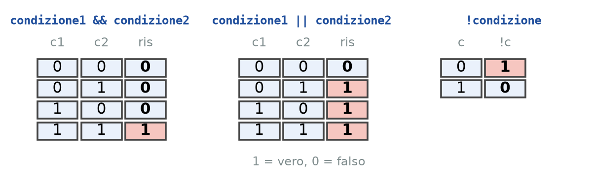
Le tavole di verità di AND, OR e NOT.
Nel prossimo capitolo si vede come usare questi operatori per confrontare un valore con un intervallo, come il C valuta le condizioni e come semplificare le espressioni complesse.
Capitolo 18: Intervalli, Cortocircuitazione e Semplificazione delle Condizioni
Confronti su intervalli
Nei programmi spesso si deve verificare se un valore cade in un certo intervallo: un indice, una temperatura, un'età. In matematica la condizione si scrive in modo compatto, min ≤ x ≤ max. In C bisogna invece spezzare il confronto in due condizioni e combinarle con un AND: min <= x && x <= max, che è la forma più vicina alla notazione matematica.
Scrivere in C min <= x <= max non produce l'effetto sperato, e il pericolo è proprio che compila senza errori. Il confronto si valuta da sinistra a destra: prima min <= x, che dà 0 oppure 1, e poi quel risultato viene confrontato con max. Con min = 0, x = 20 e max = 10, per esempio, 0 <= 20 vale 1 e 1 <= 10 è vero, anche se 20 non sta nell'intervallo.
I quattro tipi di intervallo si traducono così:
chiuso (inclusivo), x ∈ [min, max]: min <= x && x <= max;
semiaperto sinistro, x ∈ [min, max): min <= x && x < max;
semiaperto destro, x ∈ (min, max]: min < x && x <= max;
aperto (esclusivo), x ∈ (min, max): min < x && x < max.
In parole povere: un intervallo è l'insieme dei valori compresi fra un minimo e un massimo. Chiuso: gli estremi ci sono (come «dalle 9 alle 17 comprese»). Aperto: gli estremi sono esclusi. Semiaperto: ne includi uno e l'altro no. In C si scrive spezzando in due confronti collegati da && (min <= x && x <= max), non con la forma matematica.
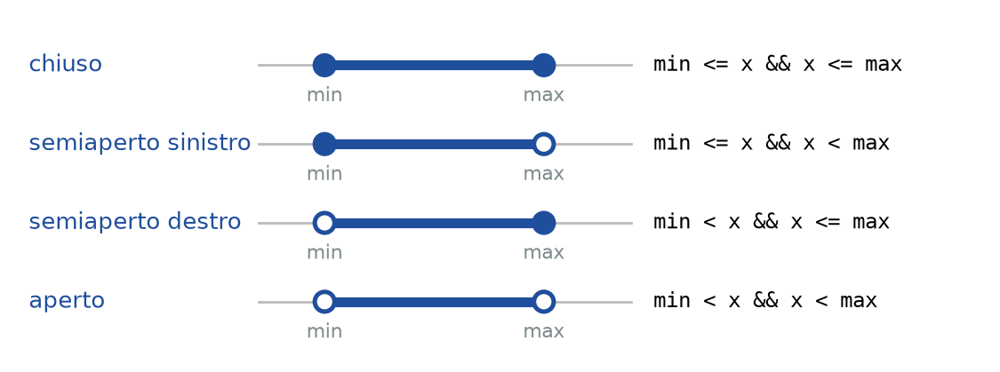
I quattro tipi di intervallo e la loro espressione in C: il cerchio pieno include l'estremo, quello vuoto lo esclude.
Le denominazioni "sinistro" e "destro" sono quelle usate nel corso: contano le notazioni tra parentesi. Nel corso si userà molto questa notazione per verificare se un indice appartiene a un intervallo semiaperto sinistro.
La cortocircuitazione
Quando si combinano più condizioni con AND oppure OR, il C interrompe la valutazione appena il risultato è già determinato (lo standard lo garantisce). Questo comportamento si chiama cortocircuitazione (in inglese *short-circuit evaluation*):
con l'AND, se la prima condizione è falsa il risultato è sicuramente falso, e la seconda non viene valutata;
con l'OR, se la prima condizione è vera il risultato è sicuramente vero, e la seconda non viene valutata.
In parole povere: la cortocircuitazione è la pigrizia intelligente del C: se dopo la prima condizione il risultato è già deciso, non guarda la seconda. Con AND, se la prima è falsa, il totale è sicuramente falso; con OR, se la prima è vera, il totale è sicuramente vero. Come chi, per sapere se tutti hanno il biglietto, smette di controllare appena ne trova uno senza.
La cortocircuitazione non è solo un risparmio di tempo, ma permette di scrivere condizioni che altrimenti sarebbero pericolose. Per verificare che il divisore sia diverso da zero e che la divisione dia un risultato maggiore di 5 si scrive:
bool condizione = (divisore != 0) && ((numeratore / divisore) > 5);
Se il divisore è 0 la seconda parte non viene eseguita, e si evita l'errore a tempo di esecuzione della divisione per zero. Un altro esempio verifica che l'utente abbia inserito un numero e che sia pari:
int valore;
bool scanPari = (scanf("%d", &valore) == 1) && (valore % 2 == 0);
Se scanf non riesce a leggere il valore (il suo risultato, come visto nel capitolo 10, non è 1), la parte a destra non viene valutata e non si guarda il contenuto di valore, che in quel caso non è affidabile.
Lo stesso schema si ritrova in un programma completo, che legge un numero e stampa tre risultati:
#include <stdio.h>
#include <stdbool.h>
int main(void) {
int numero;
bool letto, positivo, dispari;
printf("Inserisci un numero intero: ");
letto = (scanf("%d", &numero) == 1); // true se scanf ha letto correttamente
positivo = letto && (numero > 0); // input valido e maggiore di 0
dispari = letto && (numero % 2 != 0); // input valido e non divisibile per 2
// stampa i risultati (0 = falso, 1 = vero)
printf("Input valido? %d\n", letto);
printf("Numero positivo? %d\n", positivo);
printf("Numero dispari? %d\n", dispari);
}
Se l'utente inserisce 7 il programma stampa 1 per tutte e tre le domande; se inserisce una lettera, letto vale 0 e di conseguenza anche le altre due condizioni valgono 0.
Semplificare le espressioni complesse
Le espressioni booleane con molti AND e OR mescolati diventano difficili da leggere, facili da scrivere in modo sbagliato e complicate da modificare. Ecco un esempio:
bool sconto = registrato && spesaTotale >= 100 ||
(codiceNonScaduto && attivatoDallUtente);
Si procede spezzando l'espressione in sotto-condizioni con nomi chiari, usando variabili booleane intermedie e rendendo la condizione finale la combinazione semplice di pochi termini:
bool clientePremium = registrato && (spesaTotale >= 100);
bool promoExtra = codiceNonScaduto && attivatoDallUtente;
bool sconto = clientePremium || promoExtra;
Le due versioni calcolano la stessa cosa, perché in C l'AND ha la precedenza sull'OR; ma la seconda si legge a colpo d'occhio e ogni condizione ha un nome che spiega a che cosa serve.
L'operatore condizionale ternario
L'operatore ternario è un operatore condizionale compatto, che ha la forma condizione ? valore_se_vero : valore_se_falso. Si valuta la condizione: se è vera l'espressione vale il primo valore, se è falsa vale il secondo. È utile per piccole espressioni condizionali, ma solo se non pregiudica la semplicità del codice:
In parole povere: l'operatore ternario è un mini «se... altrimenti» che dà direttamente un valore: condizione ? se_vero : se_falso. È come dire «se piove ombrello, altrimenti cappello» in una sola frase. Comodo per casi semplici, ma per scelte complicate meglio usare if-else.
int x = 5;
int y = (x % 2 == 0) ? 100 : 200; // y = 200, perché x è dispari
Per condizioni più articolate è meglio usare i blocchi if..else, che sono l'argomento del prossimo capitolo.
Capitolo 19: Il Controllo di Flusso e il Costrutto if
Dalla sequenza alle decisioni
Finora abbiamo scritto programmi in cui le istruzioni vengono eseguite prevalentemente una dopo l'altra. Per costruire algoritmi più articolati dobbiamo invece poter controllare l'ordine con cui le istruzioni vengono eseguite. La programmazione strutturata (capitolo 3) utilizza tre strutture di controllo fondamentali:
la sequenza: esecuzione ordinata delle istruzioni;
la selezione: scelta fra alternative, che si realizza con l'if;
l'iterazione: ripetizione condizionata, con while, for e do-while.
In questo capitolo ci occupiamo della selezione, mentre l'iterazione verrà dopo.
Il controllo di flusso condizionato
Vediamo come rappresentare le scelte: se una condizione è vera si esegue un blocco di codice; se è falsa si fa qualcos'altro oppure si passa oltre. Questo meccanismo si chiama controllo di flusso condizionato. Un esempio quotidiano: se piove prendo l'ombrello, altrimenti esco senza (qui piove è una variabile booleana).
if (piove) {
printf("Prendi l'ombrello.\n");
}
else {
printf("Esci senza.\n");
}
La condizione fra parentesi è un'espressione booleana, di quelle viste nei capitoli 17 e 18.
In parole povere: il controllo di flusso condizionato è la possibilità del programma di prendere strade diverse in base a una condizione, come un bivio: se la condizione è vera va per una strada (esegue un blocco), altrimenti per un'altra o prosegue dritto.
Il costrutto if
L'if è il costrutto che permette al programma di scegliere che cosa fare in base a una condizione logica. La sintassi è:
if (condizione) {
// codice eseguito solo se la condizione è vera
}
Se la condizione è vera (1) il programma entra nel blocco; se è falsa (0) lo salta e continua dopo. Per esempio:
In parole povere: l'if è il «se» del programma: la condizione tra parentesi viene controllata; se è vera si esegue il blocco tra graffe, se è falsa lo si salta e si va avanti. È come «se hai la febbre, prendi la tachipirina»: la medicina si prende solo in quel caso.
int voto = 25;
if (voto >= 18) {
printf("Esame superato!\n");
}
Il costrutto if-else
L'if-else estende l'if permettendo di gestire due percorsi alternativi:
if (condizione) {
// blocco A: se la condizione è vera
}
else {
// blocco B: se la condizione è falsa
}
Se la condizione è vera si entra nel blocco A, se è falsa nel blocco B. Un esempio:
In parole povere: l'if-else è un bivio con due sole strade: un blocco se la condizione è vera, un altro se è falsa. Una delle due viene eseguita sempre, mai entrambe. Come «se piove prendo l'ombrello, altrimenti esco senza».
int batteria = 15;
if (batteria < 20) {
printf("Batteria quasi scarica! Collega il caricatore.\n");
}
else {
printf("Batteria sufficiente.\n");
}
Con batteria uguale a 15 la condizione batteria < 20 è vera, e il programma stampa il primo messaggio.
Il costrutto if-else if-else
L'if-else if-else è la generalizzazione dell'if-else a più alternative:
if (condizione1) {
// blocco 1
}
else if (condizione2) {
// blocco 2
}
else {
// blocco di default
}
Se la condizione1 è vera si entra nel blocco 1; altrimenti, se è vera la condizione2, si entra nel blocco 2; e così via. Se tutte le condizioni precedenti sono false si entra nel blocco di default. Le condizioni sono valutate nell'ordine in cui sono scritte e si esegue al più un solo blocco (esattamente uno se c'è l'else finale). Per esempio, un semaforo:
In parole povere: if-else if-else è l'if con più alternative, controllate in ordine come una serie di porte: la prima condizione vera vince e le altre non si guardano più. L'else finale è il «tutti gli altri casi». Esempio: semaforo rosso, giallo, verde, e per qualsiasi altro colore «non valido».
char colore = 'G'; // R = Rosso, G = Giallo, V = Verde
if (colore == 'R') {
printf("Fermati!\n");
}
else if (colore == 'G') {
printf("Attenzione, rallenta.\n");
}
else if (colore == 'V') {
printf("Puoi passare.\n");
}
else {
printf("Colore non valido!\n");
}
Con colore uguale a 'G' il programma stampa Attenzione, rallenta.; il blocco finale gestisce tutti i colori non previsti.
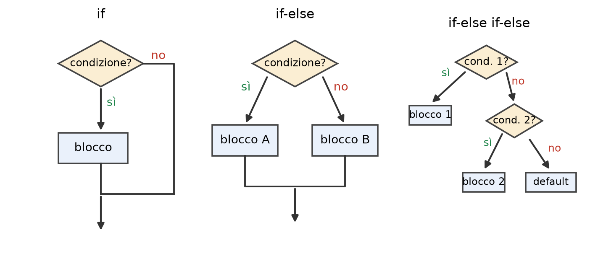
Il flusso di esecuzione di if, if-else e if-else if-else.
Il prossimo capitolo raccoglie gli errori più comuni con questi costrutti, la visibilità delle variabili dentro i blocchi e alcuni schemi che si ripetono spesso.
Visibilità nei blocchi condizionati
Nello scambio condizionato la variabile temp è dichiarata dentro il blocco dell'if. Seguiamo l'esecuzione con x = 10 e y = 5, quando la condizione y < x è vera:
all'inizio sullo stack ci sono solo x e y, con i valori inseriti;
entrando nel blocco, la dichiarazione di temp la rende visibile e la inizializza a 10;
x = y; copia 5 in x e y = temp; copia 10 in y: i valori sono scambiati;
all'uscita dal blocco, temp esce dalla visibilità: viene rimossa dallo stack e non è più accessibile.
Il programma stampa 5 10. Come nel capitolo 7, la visibilità (scope) di una variabile è quindi limitata al blocco in cui è dichiarata, e la sua durata (lifetime) finisce quando il blocco termina.
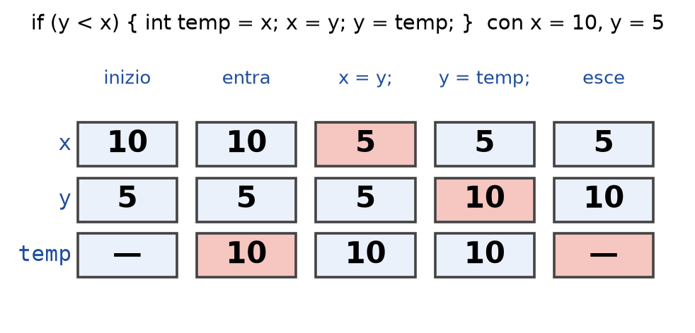
Lo scambio condizionato: temp esiste solo dentro il blocco dell'if (in rosso le celle che cambiano).